Jeu actuel · ActualitésMaquette · index.html?ecran=messages
Messages · Continuer s’arrête, puis une réponse donnée
Maquette · Continuer s’arrête sur un message important (?bloque=1)Maquette · une demande acceptée (?msg=rachidi&rep=0)
Messages · une blessure simple, et les idées de Leïla
Maquette · blessure hors affiche : un seul bouton Infirmerie (?msg=rizzo-blesse)Maquette · les idées de Leïla, cliquables (?msg=leila-carte&idees=1)
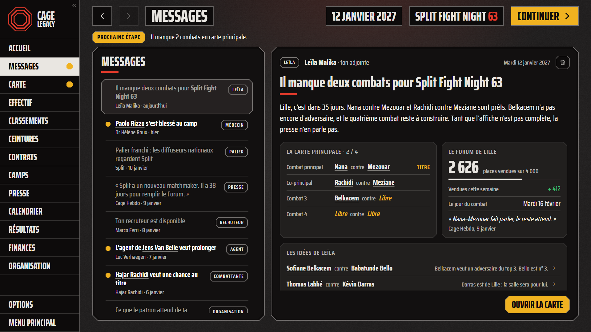
Classements · Split (R18)
Jeu actuel · Classement Split, poids légers
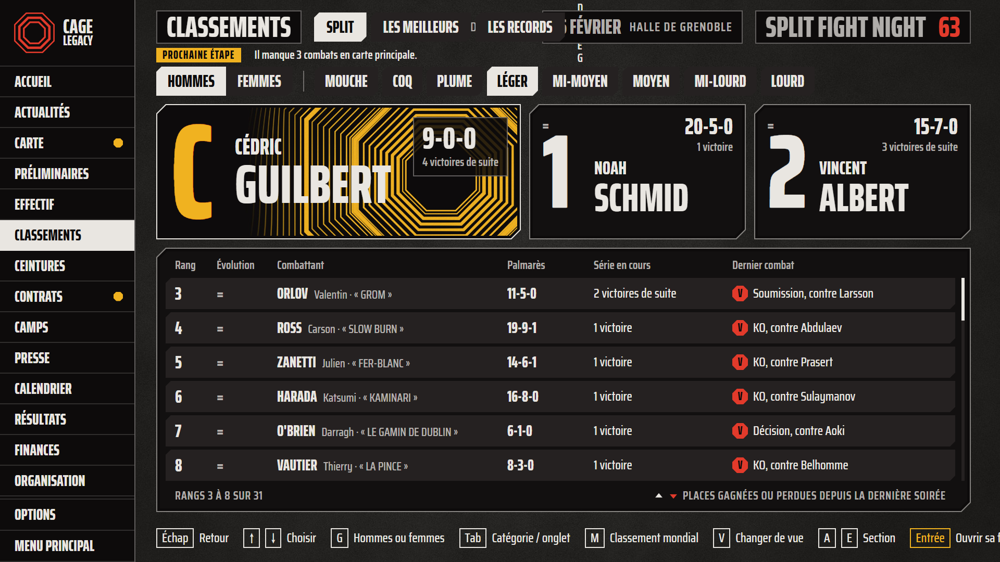
Maquette · index.html?ecran=classements · onglets sous l’en-tête, sans superposition ; le champion sur le tunnel doré, le n° 1 et le n° 2 sur le tunnel rouge, leur rang dans le logo du jeu ; victoire / défaite et montée / descente en vert / rouge ; chaque ligne a sa forme, son dernier combat et son prochain combat
Classements · mondial (R20, Q20b)
Jeu actuel · MondialMaquette · un seul écran, filtre Split / Monde à droite (formule retenue le 09/11) ; « Rang mondial », l’organisation de chacun et ses champions, forme, dernier et prochain combat, surnoms, palmarès à l’échelle des grandes organisations ; les combattants de Split marqués en jaune
Classements · Les meilleurs (R19, Q19a)
Jeu actuel · Les meilleurs
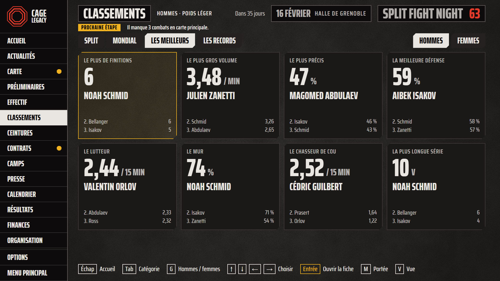
Maquette · une vitrine : chaque cadre dit ce qu’il mesure, le meilleur en grand, le 2e et le 3e avec leur écart ; hommes / femmes gardés
Classements · un cadre ouvre la liste complète (Q19a)
Maquette · « Le plus de finitions » : les 28 classés, un clic sur un nom ouvre la fiche« ‹ Les meilleurs » ramène à la vitrine
Classements · Records (R21, Q21a)
Jeu actuel · Le livre des records
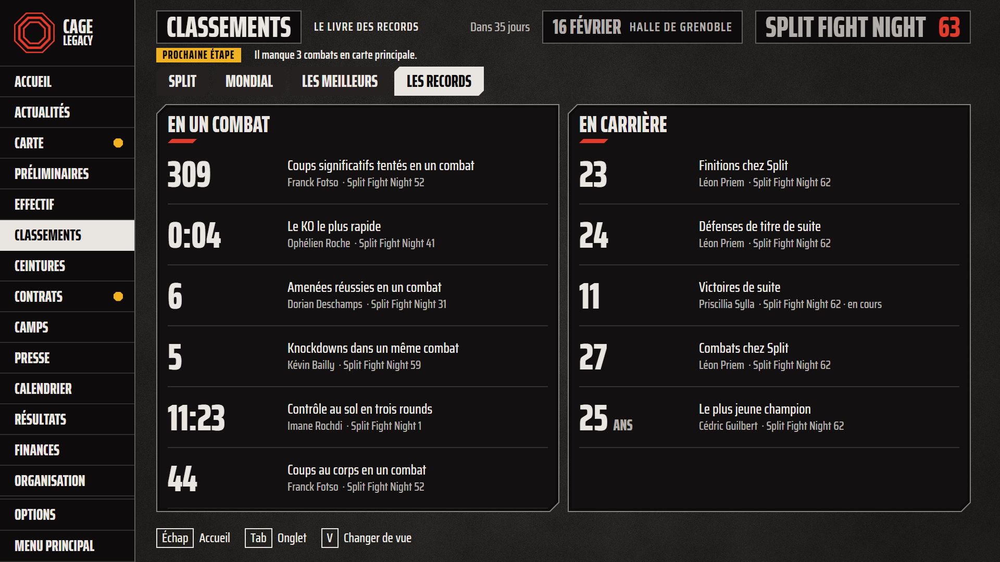
Maquette · un seul onglet rangé par type ; des valeurs crédibles ; qui, quand, et ce qu’il devient ; les soirées avec leur combat principal
Classements · Hommes ou Femmes : toutes les catégories
Maquette · index.html?ecran=classements&clcat=toutes · un clic sur Hommes (ou Femmes) : les 30 meilleurs, toutes catégories, d’après leur rang mondial ; même chose dans Les meilleurs
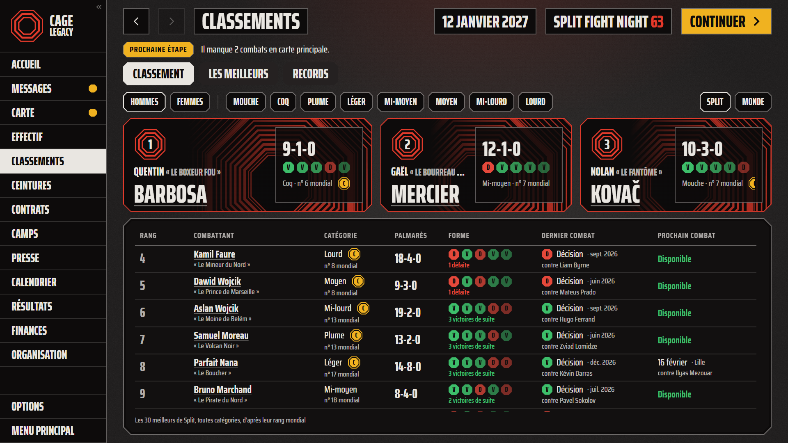
Au mondial, chaque organisation a sa couleur (contour et tunnel), les sept champions sont en tête
Les anciens et les autres organisations
Fiche de staff · un ancien devenu consultante : ce qu’elle fait aujourd’hui, sa carrière, ses records, ce qu’elle peut t’apporterCombattant parti ailleurs · sa fiche prend la couleur de son organisation (Pure Impact), son rang mondial, son organisation dans les infos
Combattant d’une autre organisation · onglet Contrat
Maquette · sous contrat ailleurs : chiffres estimés, quand il pourra venir, ce qu’il coûterait chez SplitCombats, Échos et Relation parlent aussi de son organisation, plus jamais d’un contrat chez Split
Croquis 1 · Diagonale : la diagonale noir / rouge du jeu, le tunnel en filigrane
Carte principale · index.html?ecran=carte&style=diagonale
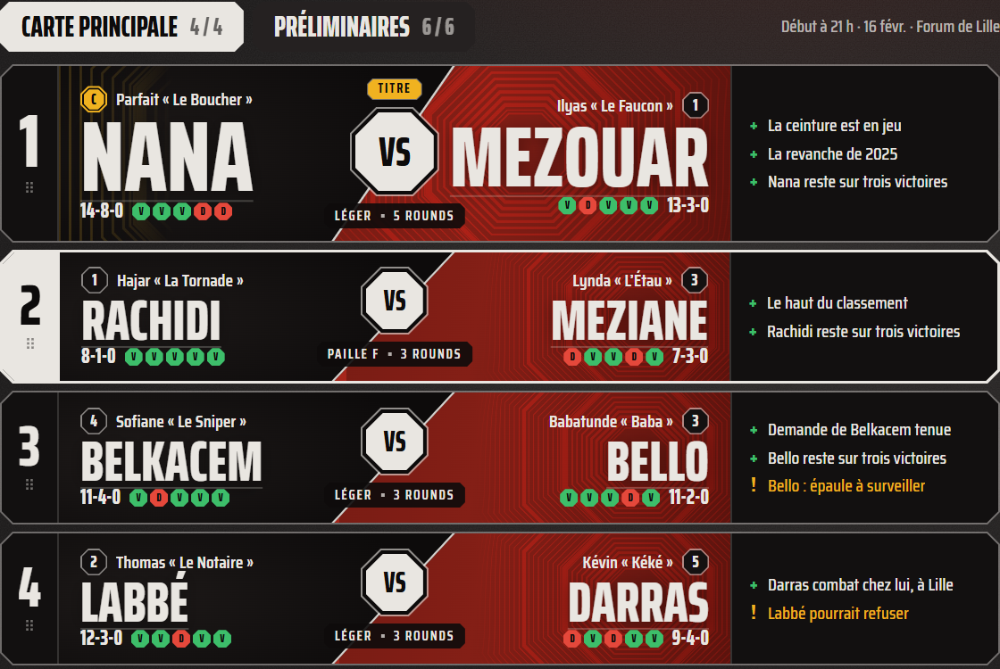
Préliminaires
Croquis 2 · Coins : plus de diagonale, un coin blanc et un coin rouge, le VS sur un fil
Carte principale · index.html?ecran=carte&style=coins
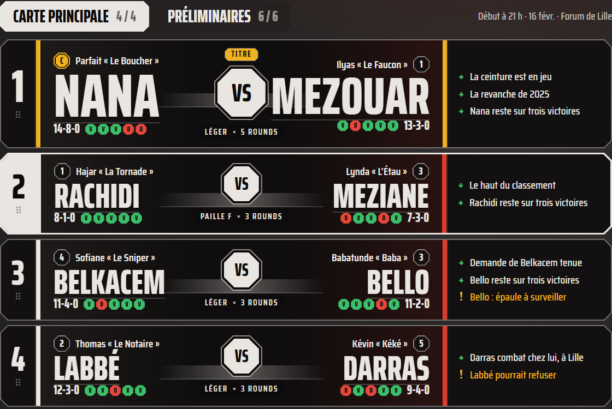
Préliminaires
Croquis 3 · Tunnel : la cage du jeu au centre derrière le VS, dorée pour un titre
Carte principale · index.html?ecran=carte&style=tunnelPréliminaires
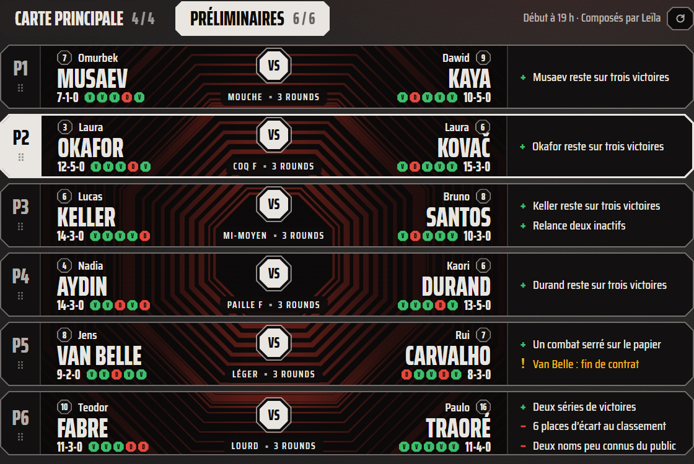
Carte et préliminaires réunis (R12, R14) · version du 08/11
Jeu actuel · CarteMaquette · onglets Carte principale / Préliminaires en haut, la carte en lignes, les combattants à droite, le bilan et les dossiers de Leïla en bas
Préliminaires : plus d’écran à part
Jeu actuel · Préliminaires
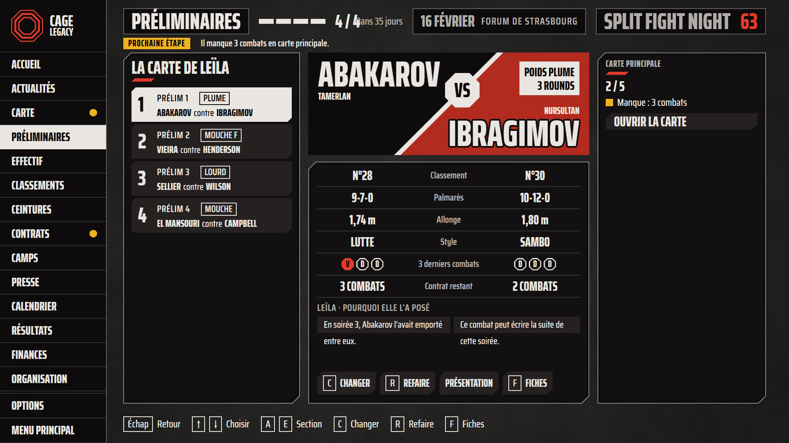
Maquette · onglet Préliminaires, un préliminaire choisi, catégories ouvertes
Carte · choisir un adversaire
Maquette · survol d’un combattant : il se pose « pour voir » sur la carteMaquette · glisser-déposer : les places possibles s’allument
Carte · le combat choisi
Maquette · carte complète, onglet « L’enjeu »Maquette · onglet « L’enjeu » : ce qui fait le combat, l’histoire, bourses et apport
Carte · place libre et résumé
Maquette · place libre : les dossiers de Leïla en basMaquette · Valider la carte : résumé avant de confirmer
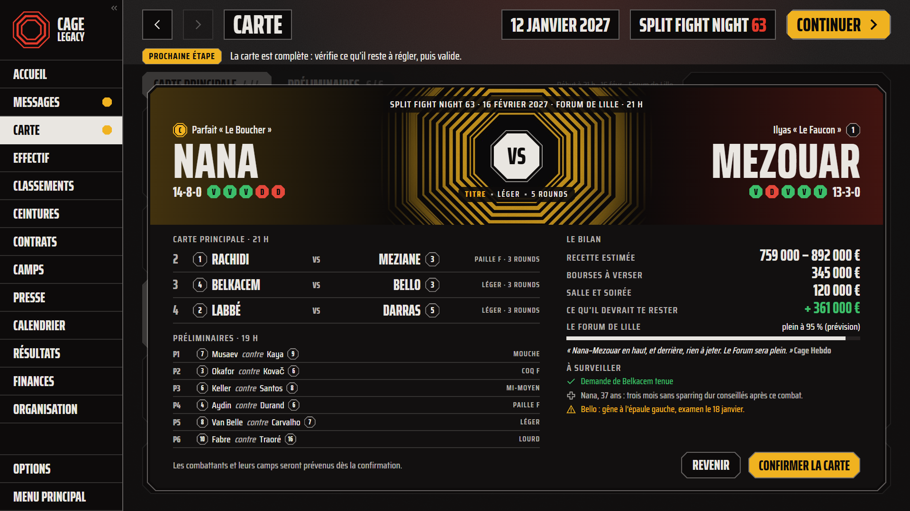
Carte · aucun combat placé
Maquette · carte vide : places libres, la presse le dit, Leïla propose en bas à droite
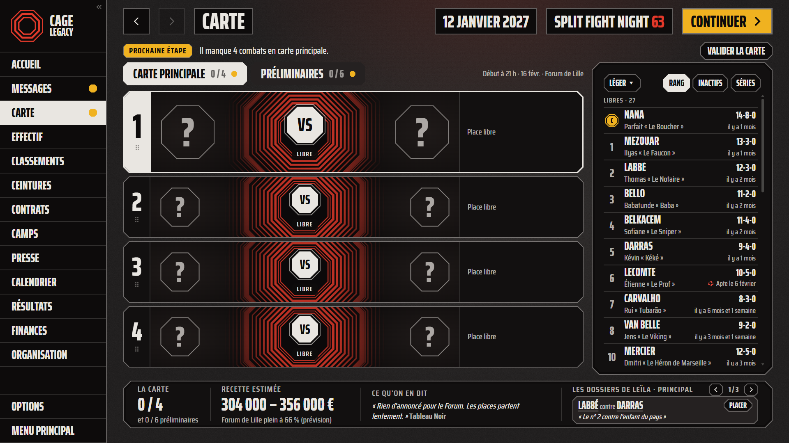
Maquette · place libre choisie
Carte · retirer un combattant
Maquette · on attrape son nom sur la ligne et on le lâche sur la colonne de droite (Annuler pendant 3 s)
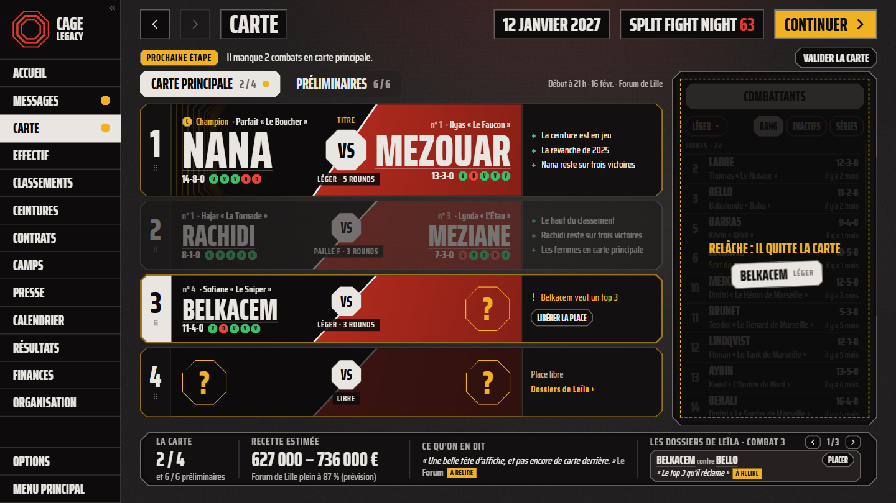
Sur la ligne choisie, le bouton « Libérer la place » fait la même chose
Recrutement (R24, R25, Q24) · un seul écran, version 2 du 09/11
Jeu actuel · Contrats › Les libres (un des deux écrans de recrutement)
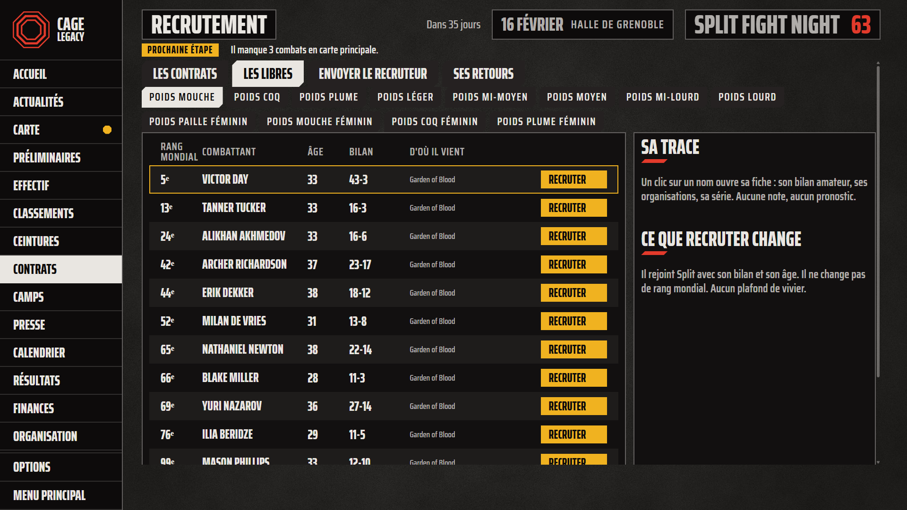
Maquette · index.html?ecran=recrutement · fins de contrat, libérés, vétérans, champions régionaux, espoirs ; « Nouveau » en petit gris après le surnom
Recrutement · le deuxième écran du jeu disparaît
Jeu actuel · Contrats › Recrutement (le doublon de R25, avec « Tu l’as vu »)
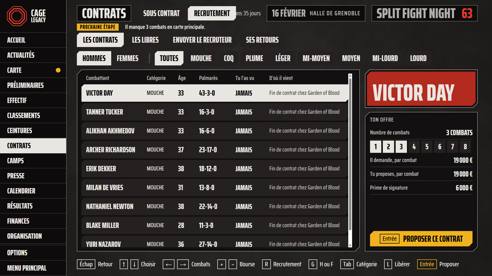
Maquette · Libres, toutes catégories : un libre que personne n’a vu, « Envoyer le recruteur »
Négociation (Q25a) · ouverture et réponse de l’agent
Maquette · ouverture : l’agent et son caractère, ce qu’il demande sous chaque levier, et ses demandes (il y tient, ça compte, un souhait)Maquette · après une offre : sa réponse dit sur quoi il est d’accord et ce qu’il veut encore face à ton chiffre
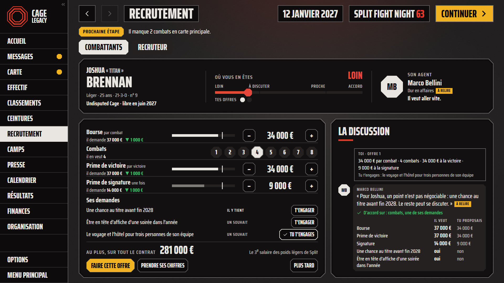
Négociation · il réfléchit, puis l’accord
Maquette · ton offre part, l’agent « lit ton offre » (points animés) avant de répondreMaquette · accord : il renonce à un souhait (barré), tu t’engages sur une demande qui compte
Négociation · confirmation et rupture
Maquette · confirmation en chiffres avant de conclure (charte S6)Maquette · même offre répétée : l’agent ne bouge plus, prévient, puis rompt ; plus d’offre avant deux mois, même en rechargeant
Fiche d’un combattant du marché (Q25b)
Maquette · onglet Contrat : sa situation et ce qu’il demande ; un libre a le tunnel grisMaquette · Statistiques cachées tant que personne ne l’a vu de près
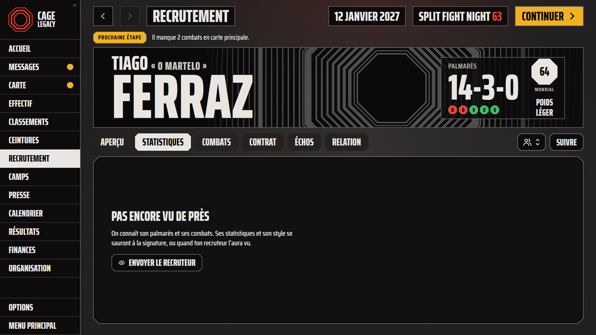
Recruteur (R26, Q26a à Q26d) · version 8 du 15/11
Jeu actuel · Contrats › Envoyer le recruteur
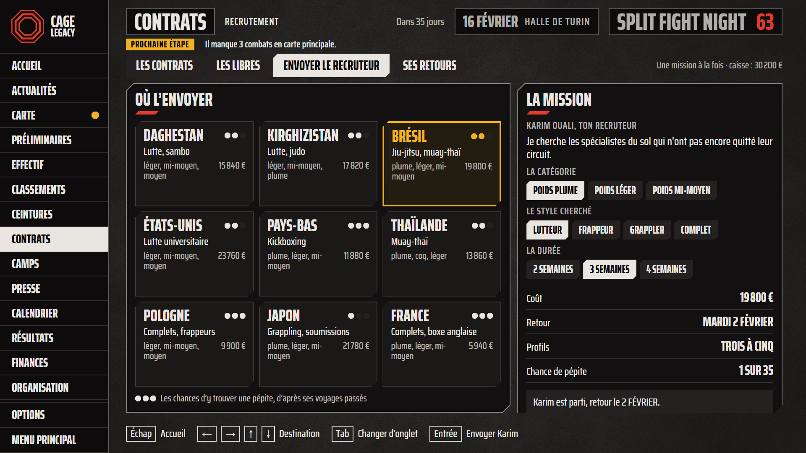
Maquette · index.html?ecran=recruteur · le tableau du marché, un chiffre par case : destination, spécialités (neuf styles communs), distance, billet aller-retour, bourse demandée ; triables. À droite : le pays sur le tunnel du jeu, ses spécialités, le voyage, la bourse demandée en moyenne, la date de retour
Recruteur · trier pour comparer
Maquette · trié par salaires : les pays où les combattants coûtent le moins en hautMaquette · Brésil : billet 870 €, salaire moyen 6 000 €
Le voyage en cours, et l’Accueil
Maquette · Marco est au Brésil : où il en est du voyage, retour, profils, coût
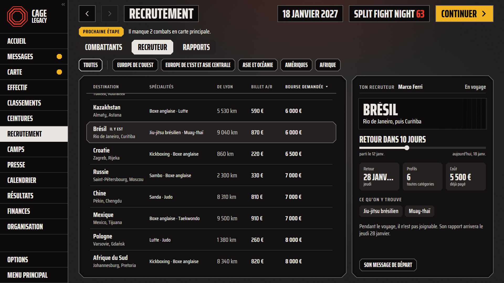
Maquette · Accueil : « En voyage à Rio de Janeiro · Retour le 28 janvier » (validé)
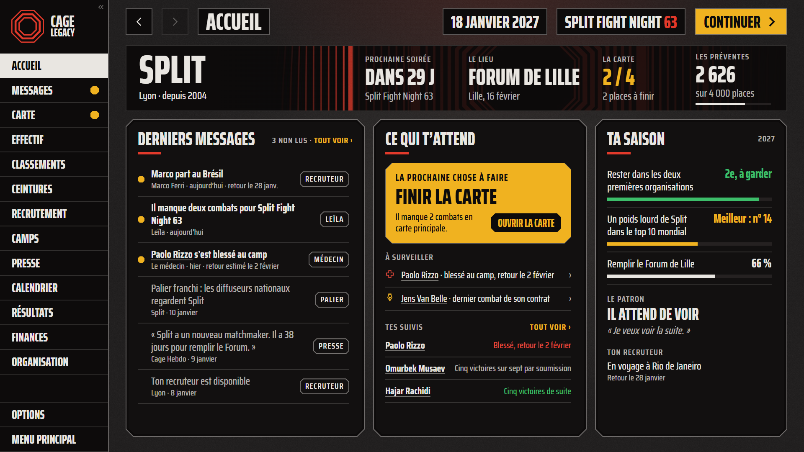
Les messages : le départ, puis les recommandations de Marco (T10)
Maquette · le départ : où, quand, combien de profils, le coût détaillé, ce qu’il va chercherMaquette · le retour arrête Continuer : ses profils dans son ordre, son avis et ce qu’ils demandent, puis « Lire le rapport »
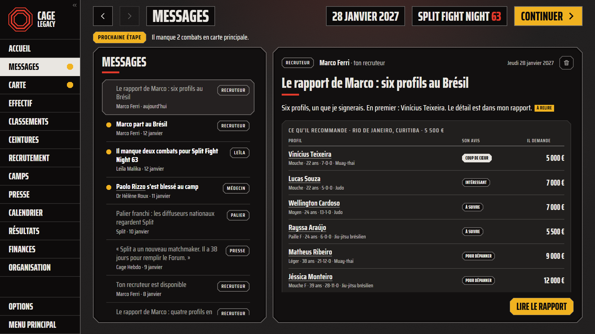
L’écran Rapports · uniquement ce qui sert à recruter
Jeu actuel · Contrats › Ses retoursMaquette · plus de bandeau : à gauche le voyage et ses profils ; à droite un seul profil avec l’avis de Marco, trois chiffres (ce qu’il demande, combien de fois Marco l’a vu, son gabarit), ses points forts et ce qu’il faut surveiller. Le reste est sur sa fiche.
Rapports · un faux bon profil, un vieux briscard
Maquette · « Intéressant », 10-0… mais vue une seule fois, et « À surveiller » dit pourquoi : combats courts, adversaires faibles.Maquette · « Pour dépanner » : 37 ans, des adversaires solides, deux risques
Rapports · l’underground, et les anciens rapports à part
Maquette · « À revoir » : vue une fois dans une soirée sans licence, des risquesMaquette · « Tous ses rapports » : la colonne de gauche liste les voyages (dont le Kirghizistan, où Musaev a été trouvé) ; un clic ouvre le rapport (date, pays, coût, noms, signés)
La fiche d’un profil (Q25b)
Maquette · sa fiche s’ouvre par-dessus le rapport, statistiques visiblesChaque nom ouvre sa fiche : cartes, frise, dossier, derniers combats (ses adversaires aussi), message
Recruteur · hypothèses prises (à valider)
Prix du voyage : billet aller-retour selon la distance (train pour Paris et Turin, avion ailleurs : 150 € + 0,08 € par km), trajet entre ses deux villes, 280 € par jour (hôtel, repas, voiture, entrées), jours de route compris, et 150 € par jour d’interprète là où Marco ne parle pas la langue. De 950 € (Paris, 3 jours) à 7 640 € (Japon, 14 jours).
Ce que le pays change ensuite : salaires (de 0,5 à 1,4 fois ceux d’un jeune pro français) et coût de chaque combat (son billet et ceux de deux coachs). Le visa n’est plus affiché (retour du 15/11). À RELIRE.
Six parcours, jamais plus de deux pareils dans un voyage : jeune pro invaincu, champion d’un circuit local, venu d’un autre sport, invaincu star du pays (le faux bon profil : un beau bilan contre des adversaires faibles, et il demande plus cher), vieux briscard (34 à 39 ans), underground (peu de combats officiels, beaucoup sans licence).
L’avis de Marco en un mot, neuf possibles : Coup de cœur, À signer, Intéressant, Solide, À suivre, Pas encore prêt, Un pari, À revoir, Pour dépanner. Ses notes sont tirées de ses statistiques face à la moyenne de sa catégorie chez Split (un « À signer » n’a jamais de note faible). Textes factuels, façon rapport de recruteur, À RELIRE.
Régions : Europe de l’Ouest (6), Europe de l’Est et Asie centrale (7), Asie et Océanie (7), Amériques (5), Afrique (5) ; Croatie, Australie et Cameroun ajoutés ; « muay-thaï » au lieu de « boxe thaï », luta livre retirée. Neuf styles communs seulement : boxe anglaise, kickboxing, muay-thaï, karaté, taekwondo, lutte, judo, sambo, jiu-jitsu brésilien, deux ou trois par pays.
La fiche d’un profil ramené : ses traits (Invaincu, Finisseur, Champion local…), « Libre, sans contrat », mondial « — », et l’onglet Relation refait (sa carrière, son entourage, ses objectifs, son bilan année par année).
Le hasard : 2 profils sur 3 dans les spécialités du pays, jamais plus de deux fois le même style ; une pépite a la même chance partout (une par voyage au plus).
Le rapport a son écran (onglet Rapports, octogone jaune tant qu’il n’est pas lu), les anciens rapports sont à part, dans « Ses rapports ». Le message n’est qu’un condensé.
27 destinations, 18 styles, deux salles et une scène par pays, tous les textes : À RELIRE. Recruteur : Marco Ferri, comme dans la maquette Messages.
Résultats (R30, Q30) · chaque combat d’un coup d’œil · cinquième passe du 10/11
Jeu actuel · Résultats après Split Fight Night 63Maquette · index.html?ecran=resultats · vainqueur à gauche, méthode au centre, perdant à droite ; une flèche seulement quand le rang bouge ; catégorie, cartes des juges sous une décision, public dans le bandeau ; les primes en médailles octogonales dorées (éclair = performance, flamme = combat de la soirée, cible = finition) avec le montant
Relevé du combat (R41, Q41) · par-dessus l’écran
Maquette · finition : les juges en tableau (un round par ligne, un juge par colonne, le gagnant du round dans la case), le score et une phrase qui dit qui menait ; les statistiques en tuiles : frappes significatives (tête, corps, jambes), précision en jauges octogonales, amenées au sol et tentatives de soumission en pastilles, temps de contrôle sur la durée du combat, knockdowns ; les frappes significatives round par round en colonnesMaquette · décision partagée : « 2 juges sur 3 donnent la victoire à Rachidi »
Le lendemain (R40, R41, Q40) · refait, dans les Résultats
Jeu actuel · Le lendemain (puis « La suite » sur un deuxième écran)Maquette · onglet « Le lendemain » : trois moments, le classement qui a bougé, la une, deux voix et les vestiaires ; la soirée en chiffres, les primes de chacun, tes blessés ; un seul écran
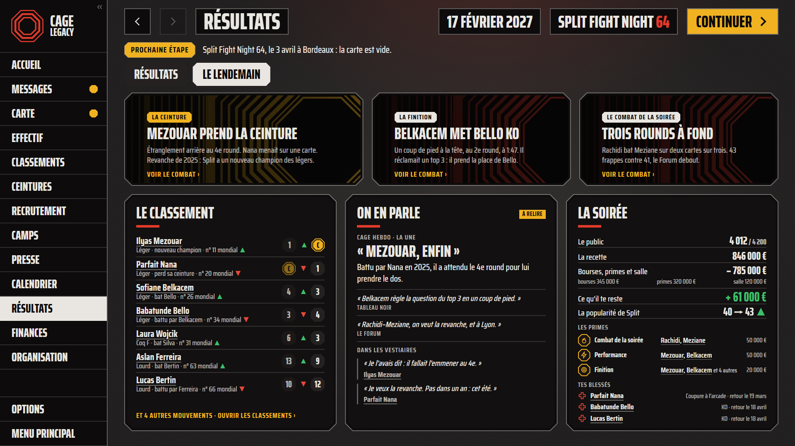
Le lendemain · ce que remplace la maquette
Jeu actuel · Le lendemain, la suiteMaquette · une soirée d’avant : Split Fight Night 62
Après la soirée · les autres écrans suivent
Maquette · Classements le 17 février : Mezouar champion, Nana n° 1, ▲ ▼ de la soiréeHypothèses prises (à valider)
Un seul écran Résultats, deux onglets : Résultats et Le lendemain. Le lendemain n’existe que pour la dernière soirée ; il porte l’octogone jaune tant qu’il n’a pas été ouvert.
Résultats inventés pour Split Fight Night 63 (carte complète de la maquette Carte) : Mezouar prend la ceinture à Nana (soumission, 4e round). Juges, coups, primes, suspensions, phrases de presse : à relire.
Le relevé d’un combat s’ouvre par-dessus la liste (règle des panneaux) ; Retour ou un clic à côté le ferme, les flèches passent au combat suivant.
Cartes des juges : le nom du vainqueur de chaque round, puis le score des rounds terminés ; le round de la finition dit « Fini à 3:12 ». Pas de 10-8 montré.
Primes : montants de l’organisation (50 000 / 50 000 / 20 000 €, fiche onglet Contrat). Chaque prime a sa médaille (éclair, flamme, cible) ; la plus rare est écrite en toutes lettres avec le total.
Le lendemain ne montre que les mouvements de la carte principale et ceux de deux places ou plus ; les autres sont dans les Classements (lien en bas).
Les soirées d’avant : le combat principal est écrit à la main, le reste de la carte est tiré au hasard. Au code, les fiches et les résultats devront lire la même source (aujourd’hui la maquette de fiche se contredit, ex. Darras).
Revoir le combat : deux boutons, « dans l’arène » et « le récit » (Q39b). Aucun n’est jaune : le seul bouton jaune de l’écran reste Continuer.
Les chiffres de la soirée (recette, bourses, primes) sont dans le lendemain seulement. La note « Le public 44 / 100 » du jeu est retirée (charte H1).
Le nombre de combats restants au contrat n’est pas décompté après la soirée (Mezouar finirait son contrat : un message à prévoir).
Les statistiques du combat (précision, zones de frappe, amenées au sol, temps de contrôle, soumissions, knockdowns) sont tirées à la graine pour la maquette ; seules les frappes significatives par round sont écrites pour Split Fight Night 63.
Nom des soirées gardé « Split Fight Night 63 », comme les autres maquettes (Q29a reste à appliquer partout en même temps).
Camps (R27, Q27a à Q27c) · septième passe du 15/11 : ce qui bouge, l’entraîneur
Jeu actuel · Camps : 92 salles, une à la fois, en carrouselMaquette · index.html?ecran=camps · « Split » : les salles de tes combattants en cartes, en trois rayons (grandes écuries, salles, clubs) ; trois octogones disent la taille, la spécialité est écrite sur chaque carte. Un octogone par combattant (jaune à l’affiche, rouge blessé). Un seul bouton « Rang » (croissant / décroissant) et un menu « Spécialité »
Camps · le menu Spécialité, l’entraîneur, et le monde
Maquette · un clic sur un entraîneur : son âge, depuis quand il dirige la salle, ce qu’il faisait avant (et son bilan s’il a combattu en MMA), son parcours de salle en salle, son équipe (frappe, lutte, jiu-jitsu, préparation physique), sa salle en 2026. Pas de liste de combattantsMaquette · « Le monde » : plus de podium (trop proche des Classements). Ici filtré sur la lutte : les mêmes rayons par taille, le rang sur chaque carte, la spécialité choisie en blanc, trait jaune quand Split y a des combattants. « Envoyer Marco › » mène au Recruteur
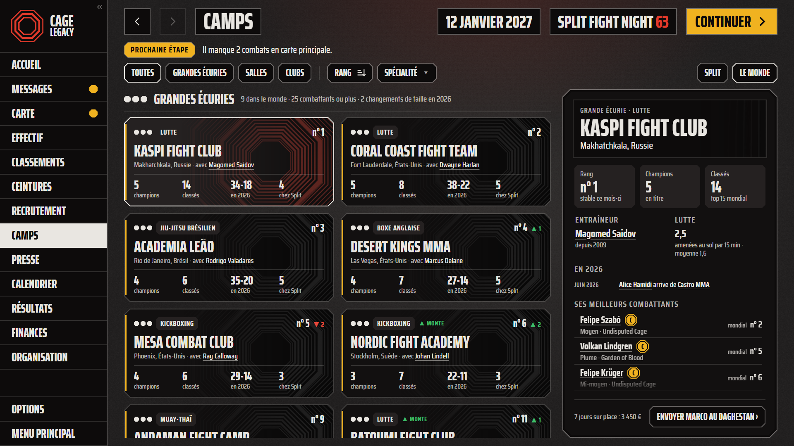
Camps · la fiche suit
Maquette · fiche de Paolo Rizzo, onglet Relation : sa salle et son entraîneur viennent de l’écran Camps ; le partenaire « même salle » est vraiment de sa salleHypothèses prises (à valider)
Trois tailles, trois rayons : grande écurie (25 combattants ou plus), salle (8 à 24), club (moins de 8). Les cartes n’ont pas la même taille ; trois octogones (●●● ●● ●) répètent la taille sur chaque carte. Le filtre Toutes / Grandes écuries / Salles / Clubs reste.
Un seul tri : le rang mondial, du n° 1 au dernier ou l’inverse (retour du 15/11), dans chaque rayon. La spécialité se filtre par un menu (huit spécialités, avec le nombre de salles) et s’affiche sur chaque carte. « Tes salles » devient « Split ».
Le monde entier : 240 salles, dont 24 en France (10 %). Les pays pèsent comme dans l’effectif de l’UFC : États-Unis (28 salles), Brésil, Russie devant. Split est la deuxième organisation du monde : un tiers de ses combattants s’entraînent en France, les autres partout (150 salles, 12 combattants de Split au plus dans une salle).
Vérifié avec la vraie vie : un combattant actif fait environ 1,7 combat par an (2014-2025) ; une très grande écurie compte plus de 30 combattants à l’UFC. Dans la maquette : environ 1,3 combat par combattant inscrit (tous ne combattent pas chaque année), et une salle gagne au mieux 6 combats sur 10 (Coral Coast : 38-22). Au plus 5 champions en titre par salle.
Le classement des salles : champions en titre, classés dans le top 15 mondial, taille, bilan 2026. Les grandes écuries sont devant ; une salle moyenne peut entrer dans le top 10 avec plusieurs champions.
Retirés : le tableau, le podium, les sections par lieu (autour de Lyon…), le carrousel, « S’ils se battent, ils le prennent mal », les touches, l’onglet Entraîneurs, les « champions formés ».
L’effet du camp sur la forme existe dans le jeu mais n’est pas affiché (donnée cachée, charte). La plaque reste « Camps » ; le regroupement avec la Presse (T4) n’est pas fait.
Ce qui bouge en 2026 (« progresser, rétrograder, changer de salle ») : une salle peut monter ou descendre d’une taille (« ▲ monte », « ▼ descend » sur la carte, « salle il y a un an, grande écurie aujourd’hui (22 → 27 combattants) » dans le panneau), 28 salles l’ont fait ; 56 combattants de Split ont changé de salle (arrivées et départs datés, noms et salles cliquables) ; 13 salles ont changé d’entraîneur (l’ancien part adjoint ailleurs).
Une statistique par spécialité, différente pour chacune : amenées au sol (lutte), victoires par soumission (jiu-jitsu brésilien), précision à la tête (boxe anglaise), coups de pied (kickboxing), frappes au clinch (muay-thaï), clés de jambe (sambo), projections (judo), frappes encaissées (karaté). Un clic sur l’étiquette de la carte l’ouvre à la place du milieu de la carte, avec une jauge face à la moyenne (rien ne se superpose) ; le panneau la montre toujours.
L’entraîneur est souligné partout et ouvre son portrait dans le panneau (Retour, ou le nom de la salle, revient à la salle). L’équipe dépend de la taille : quatre adjoints dans une grande écurie, trois dans une salle, zéro ou un dans un club. Pas encore de vraie fiche d’entraîneur.
Rang : en décroissant, les rayons s’inversent aussi (les clubs d’abord) et la liste revient en haut ; c’était le bug signalé (la liste sautait vers la salle choisie).
Noms de salles et d’entraîneurs, années, statistiques et mouvements : inventés, à relire.
Finances (R31, Q31) · deuxième passe du 15/11 : la caisse
Jeu actuel · six cartes en grande partie videsMaquette · index.html?ecran=finances · « La caisse » : la caisse sur le tunnel, le solde en escalier (une marche par soirée, verte si elle rapporte), une case par soirée, et le détail de la soirée choisie : recettes, dépenses, ce qu’il te reste, et ce qui a changé depuis la soirée d’avant, avec la raison
Finances · une soirée qui rapporte peu, et la soirée à venir
Maquette · Split Fight Night 57 (Bordeaux) : 2 780 spectateurs de moins qu’à Lyon, mais pas de Nana à payerMaquette · Split Fight Night 63, à venir : seulement ce qui est déjà signé ou vendu (les préventes avancent avec Continuer), tes primes et « Modifier ›»
Finances · après la soirée, et les bourses
Maquette · ?apres=1 : le 17 février, la 63 reprend les chiffres du Lendemain (846 000 € de recette, 345 000 € de bourses, 320 000 € de primes, 120 000 € de salle : + 61 000 €)
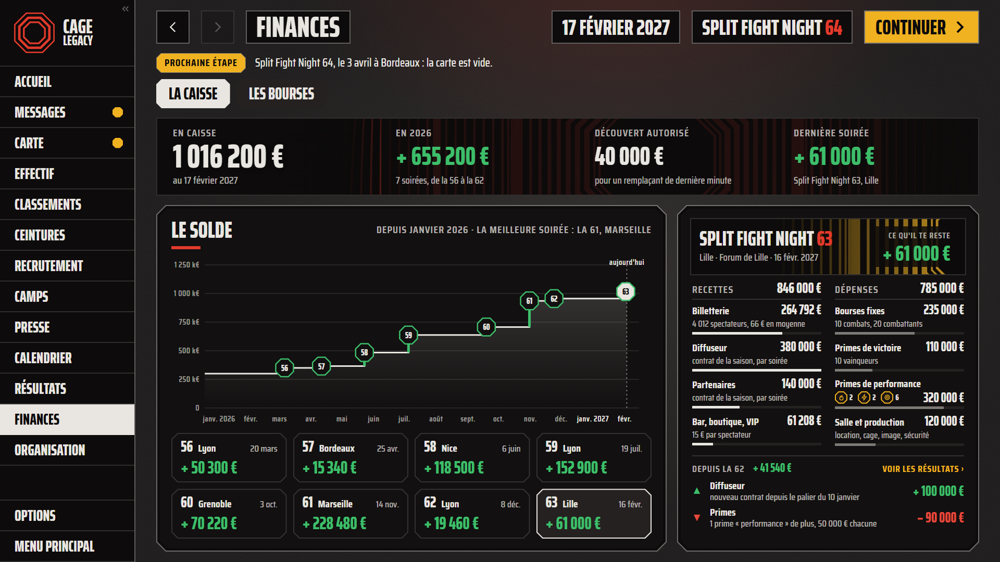
Maquette · « Les bourses » : une carte par catégorie (bourse moyenne, ce qu’elle a coûté en 2026, la bourse la plus haute), de la plus légère à la plus lourde, sans bouton de tri ; filtre Hommes / Femmes ; à droite ses combats de 2026, les plus hautes bourses et les fins de contrat avec « Prolonger ›»
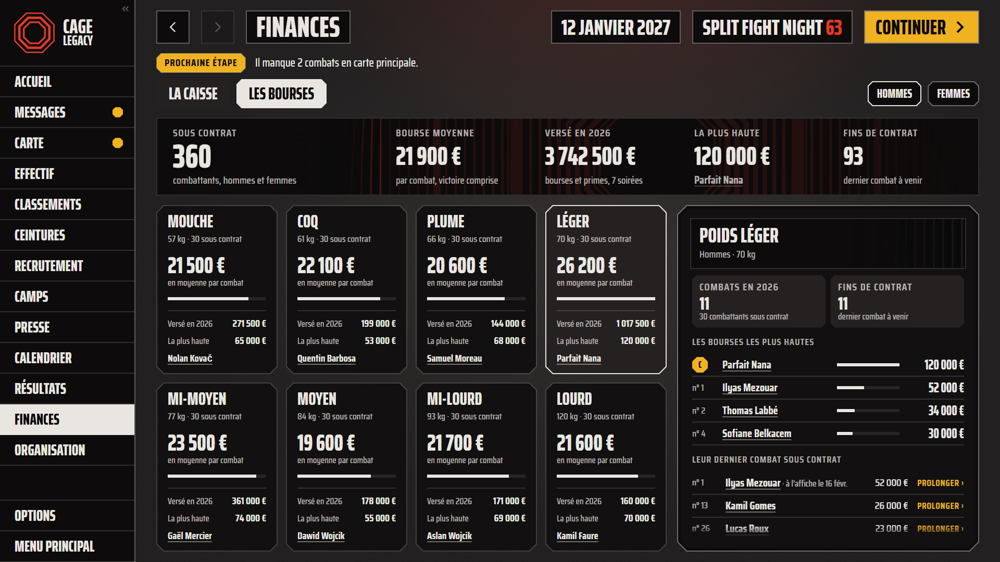
Finances · Femmes, et Prolonger
Maquette · Femmes : quatre grandes cartes, le chiffre à gauche, le détail à droite ; le filtre est gardé au retourMaquette · « Prolonger › » ouvre la fiche sur l’onglet Contrat ; Retour revient aux Finances, dans le même état
Finances · hypothèses prises (à valider)
Date : 12 janvier 2027, la 63 est à venir (on n’en montre que le signé et le vendu, aucune prévision). Ses chiffres du Lendemain n’apparaissent qu’après la soirée (?apres=1).
Recettes : le jeu n’a que billetterie et diffuseur. J’ai ajouté partenaires et bar, boutique, VIP (la recette du Lendemain, 846 000 €, ne s’explique pas sans eux). À garder ou non.
Pas de frais fixes (bureau, salariés, assurance) : ils n’existent pas dans le jeu, donc la caisse ne bouge qu’aux soirées. C’est pour ça que Split gagne de l’argent à chaque soirée ; dans la vraie vie, beaucoup d’organisations de ce niveau en perdent. À trancher.
Diffuseur : 280 000 € par soirée en 2026, 380 000 € depuis le palier du 10 janvier (message « les diffuseurs nationaux regardent Split ») ; partenaires 110 000 € puis 140 000 €. Aucun montant public n’existe en France (Canal+ pour Ares, RMC Sport pour Hexagone) : ordre de grandeur inventé.
Billet moyen 52 à 66 € selon la ville (UFC Paris 2022 : 3,4 M€ pour 15 405 places, ≈ 220 € ; une organisation de niveau 2 vend bien moins cher). Bar, boutique et VIP : 12 € par spectateur.
Bourses : celles des contrats de l’Effectif (moitié fixe, moitié à la victoire, comme l’onglet Contrat). Un adversaire hors de Split reçoit 14 000 € (30 000 € en combat principal). Ordres de grandeur : Bellator 2023, 3 000 + 3 000 $ en préliminaires, 50 000 + 50 000 $ en tête d’affiche.
Primes : 50 000 / 50 000 / 20 000 € (montants de la fiche). Elles pèsent 150 000 à 320 000 € par soirée, souvent plus que la salle : c’est généreux pour ce niveau (l’UFC donne 50 000 $). Le joueur les fixe (R39).
Salle et production : 95 000 à 130 000 € (location, cage, image, sécurité), 120 000 € à Lille comme au Lendemain. Pas de tarif public trouvé.
Caisse au 1er janvier 2026 : 300 000 €. Découvert autorisé : la règle du jeu (dernière recette nette lissée sur deux soirées).
Ce qui a changé : les deux plus gros écarts avec la soirée d’avant, en effet sur ce qu’il te reste, avec leur raison (public, Nana à l’affiche ou non, primes, salle, nouveau contrat).
Vérifié : chaque soirée, recettes moins dépenses = ce qu’il te reste ; la somme des catégories = le versé de 2026 (3 742 500 €) ; Nana combat à la 56, la 59 et la 62, comme ses primes dans la fiche. Écart repéré dans les Résultats (pas corrigé ici) : l’Effectif date le dernier combat de 53 combattants au 8 déc. 2026 (dont Mezouar, Lecomte, Rachidi, Meziane), mais la carte de la 62 ne les contient pas : les dates générées « au 8 du mois » ne suivent pas les cartes des soirées. À reprendre dans l’Effectif ou les Résultats, pas dans les Finances.
Courbe : une seule, en escalier, sans prévision. Les cases des soirées vont de la plus ancienne à la plus récente, dans le sens de la courbe (la règle « du plus récent au plus ancien » vaut pour la série V / D).
Les bourses : « Versé en 2026 » vient des mêmes soirées que la caisse ; pas d’historique des salaires (rien dans le jeu ne dit ce qu’ils étaient avant) ; ce qui bouge est montré dans « La caisse ». Le budget n’est jamais imposé (Q31).
Organisation (R32, Q32a, Q32b) · deuxième passe du 16/11 : les huit
Jeu actuel · « Le classement des huit » : popularité, salle, notoriété, puissance, peu lisibles ; « juste devant / juste derrière » inversé
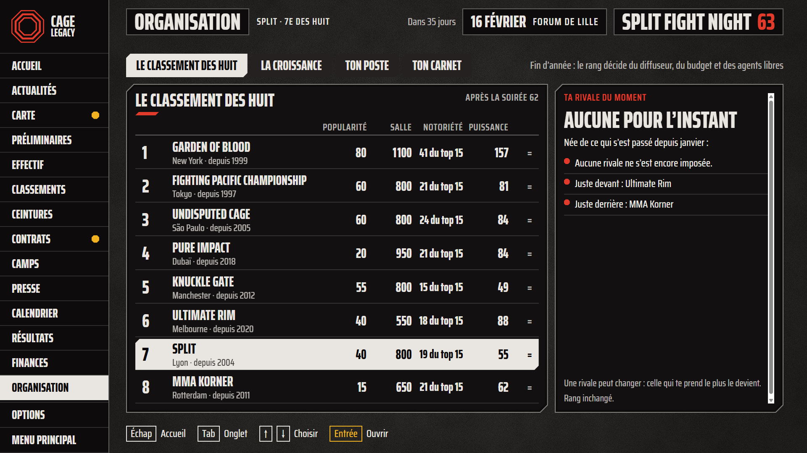
Maquette · index.html?ecran=organisation · le bandeau dit ta place, qui est juste devant (et ce qu’il faut pour le passer), juste derrière, la fin de saison ; puis une colonne par organisation, son emblème (le logo du jeu à sa couleur), ▲ ▼ et ses quatre mesures en jauges
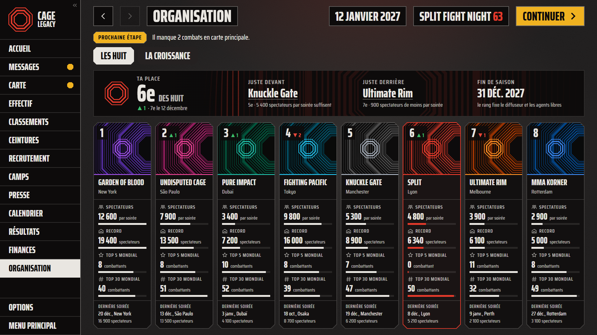
Organisation · une organisation, par-dessus les colonnes
Jeu actuel · « La croissance » : quatre pistes, des textes faux (recruteur « France », agents libres), les salles en types
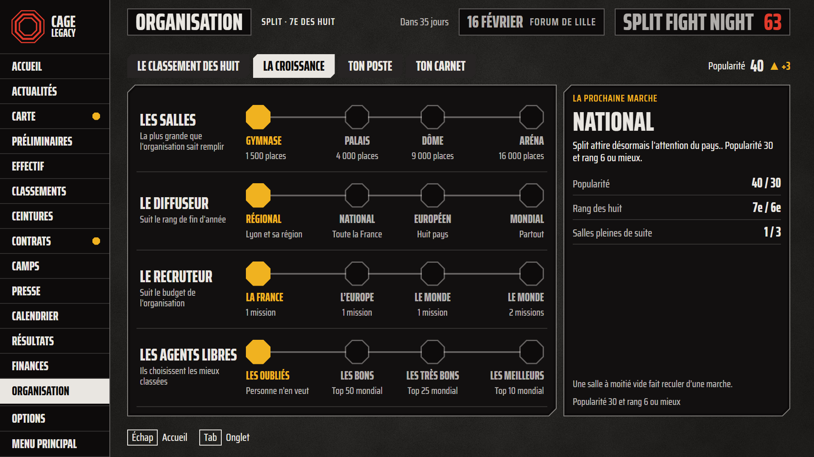
Maquette · Garden of Blood : ce qui a bougé, ses quatre chiffres face à Split, son diffuseur et ses salles, ses meilleurs classés (fiche au clic) ; fermé par la croix, un clic à côté ou Retour
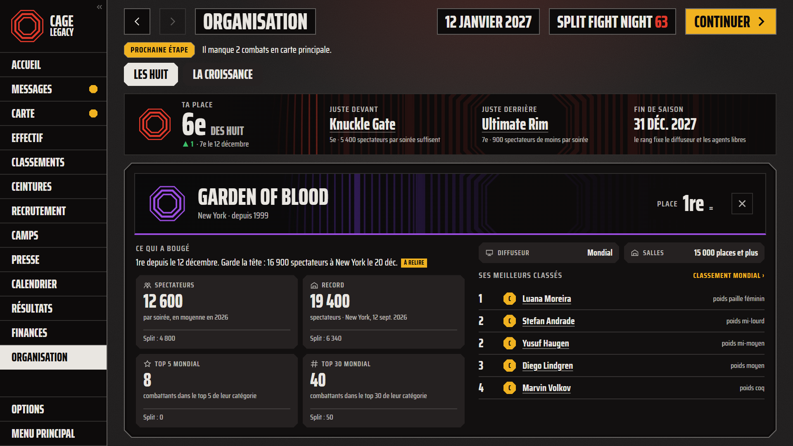
Organisation · La croissance (R33, Q33a, Q33b)
Maquette · les six pistes à gauche (marche du moment, avancée, la plus proche) ; à droite la piste choisie : ses quatre marches en escalier, ce que Split a aujourd’hui, ce qu’il faut pour monter avec les vrais chiffres, ce que ça donneMaquette · les agents libres : une place se montre sur les huit places, un rang mondial sur le top 10 ; le meilleur classé de Split ouvre sa fiche
Organisation · hypothèses prises (à valider)
Split est 6e des huit, pas 2e. Avec les données des maquettes validées, c’est le seul résultat honnête : Split a le plus de classés (50 dans le top 30 mondial, 3e) mais aucun dans le top 5, et 4 800 spectateurs en moyenne (Résultats). Le jeu actuel le place aussi 6e ou 7e. L’Accueil dit « 2e, à garder » : à corriger (par exemple « Monter dans les quatre premières »), à toi de trancher.
Les quatre mesures, chacune avec son unité (Q32b) : popularité → Spectateurs (par soirée) ; salle → Record (spectateurs) ; notoriété → Top 5 mondial (combattants) ; puissance → Top 30 mondial (combattants). Le bas de chaque colonne donne la dernière soirée (date, ville, spectateurs) ; celle de Split vient des Résultats (8 déc., Lyon, 5 210).
Le rang additionne les places sur les quatre mesures, comme le jeu ; à égalité, le public départage. Il est revu chaque mois (Q32a : il bouge) ; les flèches comparent au 12 décembre, un mois avant la date du jeu (12 janvier 2027).
Top 5 et top 30 sont comptés dans le classement mondial des Classements, catégorie par catégorie. Le public, les records et les dernières soirées des sept autres organisations sont inventés, à l’échelle réelle : UFC 2023, 363 518 spectateurs sur 43 soirées (≈ 8 450) et 19 000 à 20 000 au Madison Square Garden ; Oktagon 12 200 à Dortmund, 19 000 à Cologne ; PFL 18 000 à Riyad.
Deuxième passe (retour du 16/11 : « deux ou trois niveaux en dessous ») : les cartes vides et les étiquettes répétées sont remplacées par un bandeau qui répond d’un coup d’œil (ta place, juste devant, juste derrière) et huit colonnes à jauges ; la croissance n’est plus un mur de texte mais une liste et un grand panneau (escalier, conditions en chiffres, les places en octogones au lieu d’une barre).
Raisons des mouvements (record à São Paulo, classés partis chez Pure Impact, 2 100 spectateurs à Perth) : inventées, à relire.
Croissance (Q33a) : les quatre pistes du jeu, corrigées pour dire vrai (le recruteur voyage déjà partout ; les agents libres qui répondent sont classés au-delà du 60e, comme au Recrutement ; le diffuseur est national depuis le 10 janvier, 380 000 € par soirée comme dans les Finances ; les salles en places, pas en types). Deux pistes proposées : les partenaires et les soirées hors de France.
Les conditions lisent la partie : 6 340 sur 8 000 à Marseille, 4 800 de moyenne, 952 200 € en caisse, la 6e place, le meilleur classé de Split (n° 6). Les seuils (90 %, 6 000, 1 000 000 €, 4e place) sont des propositions.
Grande salle (Q35b) : dans le MMA, une aréna d’environ 15 000 places (l’UFC Paris à l’Accor Arena : 15 405). C’est la dernière marche des salles.
Poste et Carnet (R34, R35) ne sont pas dans cette maquette : ils fusionnent en un écran à part (Q34b), à faire ensuite.
Écart repéré ailleurs (pas corrigé) : dans la fiche d’un combattant d’une autre organisation, le prochain combat peut être contre un combattant de Split (Vicente Fitzgerald, Pure Impact, « contre Quentin Barbosa »).
Ta carrière (R34, R35, Q34a, Q34b) · Poste et Carnet fusionnés
Jeu actuel · « Ton poste » : vide, barre de défilement, objectifs « en cours » sans échéance, « Répondre à ce qui manque » incompréhensible, « Proposer un choc » à l’arrivée
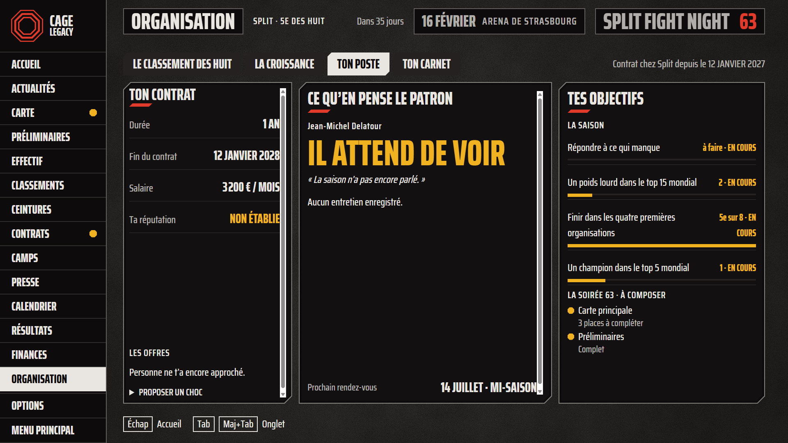
Maquette · index.html?ecran=organisation&vue=carriere · troisième onglet de l’Organisation : ton poste dans le bandeau, les objectifs du patron jugés le 31 déc., ton parcours depuis le 4 janv., Split avant toi, tes défis du palier 1
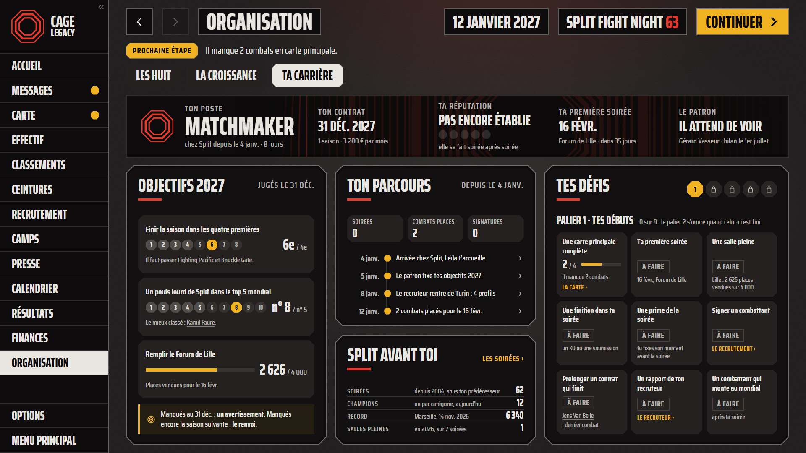
Ta carrière · les défis par paliers (R35, Q35a, Q35b)
Jeu actuel · « Ton carnet » : l’historique de Split compté comme le tien (62 soirées), 33 défis sur 43 « réussis » sans rien avoir fait, « matchmaker depuis le 12 janvier »Maquette · un palier fermé se consulte : ses neuf défis, cadenas, « s’ouvre quand le palier 2 est fini » ; la grande salle est au palier 3
Ta carrière · hypothèses prises (à valider)
Nom et place (Q34b) : « Ta carrière », troisième onglet de l’écran Organisation, à côté des huit et de la croissance. Pas d’entrée de plus dans la barre.
Deux parties (R35) : toi (ton parcours depuis le 4 janv., date du message de bienvenue de Leïla) et Split avant toi (62 soirées, sous ton prédécesseur). Rien n’est compté comme fait si tu ne l’as pas fait : 0 soirée, 0 signature (Musaev a été signé en octobre, avant toi).
Objectifs du patron (Q34a) : jugés le 31 déc. ; manqués, un avertissement ; manqués encore la saison suivante, le renvoi. À trancher : combien d’objectifs manqués déclenchent l’avertissement (ici, sans préciser).
Écart avec Messages et l’Accueil : ils disent « Rester dans les deux premières organisations ». Avec Split 6e (Organisation), j’ai pris l’objectif du jeu actuel, « Finir la saison dans les quatre premières », qui est aussi la condition de la piste Diffuseur. Les deux écrans validés sont à aligner.
Contrat : une saison, jusqu’au 31 déc. 2027, 3 200 € par mois (salaire du jeu). Bilan avec le patron le 1er juillet (mi-saison). Réputation : cinq niveaux, aucun atteint avant la première soirée.
Défis (Q35a) : cinq paliers de neuf ; le suivant s’ouvre quand le précédent est fini. Le palier 1 suit l’état réel : carte 2 / 4, préventes de Lille, Van Belle en fin de contrat. Les intitulés des paliers 2 à 5 sont des propositions.
Grande salle (Q35b) : une arène de 15 000 places ou plus, celles des grandes soirées de l’UFC (17 000 au MGM Grand Garden Arena, 20 000 à la T-Mobile Arena), loin des 4 000 du Forum de Lille. Les huit organisations utilisent déjà ce seuil (« 15 000 places et plus »).
« Proposer un choc » est retiré de cet écran : le choc des organisations arrive par un message (R34).
Calendrier (R29, Q29a, Q29b, Q21c, T9) · la première version, reprise au propre et peaufinée (17-18/11, validé)
Jeu actuel · « petite · 9 combats », « Split Fight Night 1 », « Où en est la soirée », « P pour poser une soirée », barre de touches
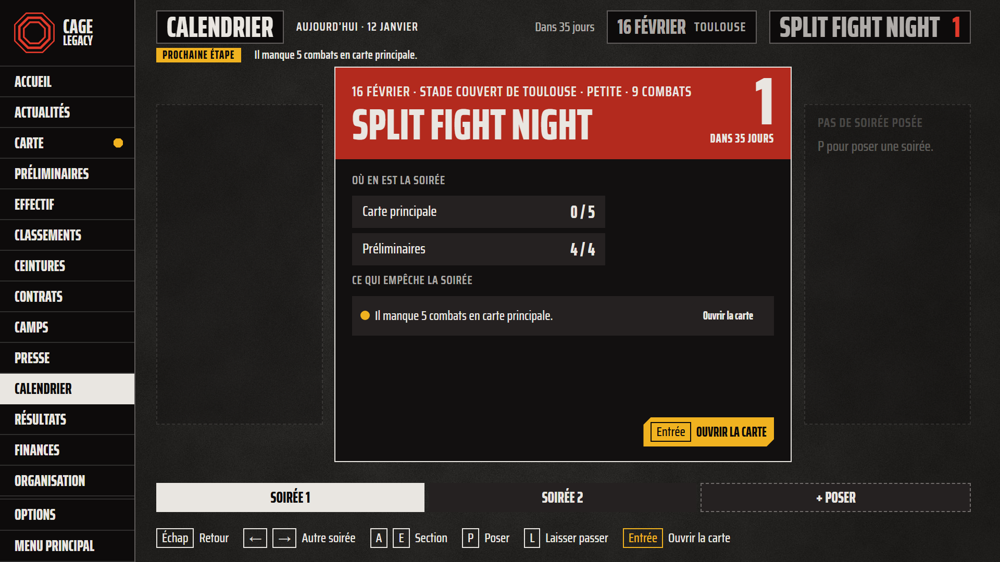
Maquette · index.html?ecran=calendrier · six mois à la fois, avec une légende des seuls repères présents (aujourd’hui en anneau blanc, ta soirée en rouge, ceinture en jeu en doré, fermé en une seule zone hachurée, rendez-vous en trait sous le chiffre) ; le jour choisi en blanc cassé, comme l’élément courant du jeu ; chaque soirée a sa ligne sous son mois ; en bas, les faits de la saison ; à droite la Fight Night 63 : places, préventes, billet, l’enjeu, la carte, la semaine du combat, et pourquoi elle ne se retire plus
Calendrier · retirer une soirée
Maquette · &soiree=64 · le 3 avril à Bordeaux : billetterie le 23 janv., location ; les combattants les plus longtemps sans combat (hors blessés qui reviennent après la date) ; retirable jusqu’au 22 janvier pour 50 000 €Maquette · &retrait=64 · la confirmation en chiffres (charte S6) : date, salle, coût, ce qui se passe ensuite ; « Revenir » ou « Retirer »
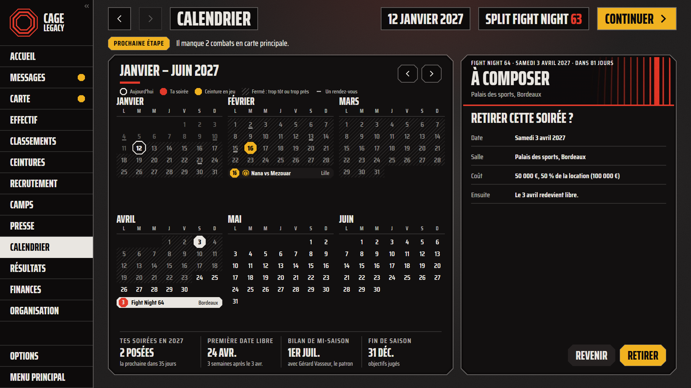
Calendrier · poser une soirée
Maquette · &jour=2027-05-08&type=phare&salle=marseille · un clic sur un jour libre : le genre (Fight Night ou soirée phare), la salle (places, dernière soirée de Split, location), le nom qu’elle prendra et « Poser la soirée »Maquette · un clic sur un jour hachuré (ici le 10 avril, une semaine après la 64) : refusé, avec la raison et la première date libre
Maquette · « Split 1 » le 8 mai à Marseille, puis la Fight Night 65 le 29 mai à Nice : deux lignes sous mai, et les trois semaines autour de chaque soirée se fermentMaquette · une deuxième soirée phare en mai : refusée, avec la raison et quoi faire ; une Fight Night reste possible
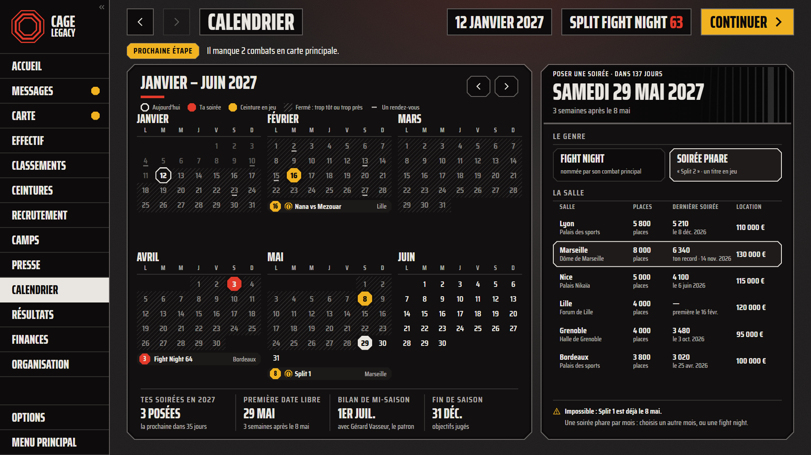
Maquette · retour du 17/11 (quatre soirées du 13 au 16 mai, une ligne qui débordait) : le 15 mai, entre Split 1 et la Fight Night 65, est refusé ; deux soirées au plus tiennent dans un mois
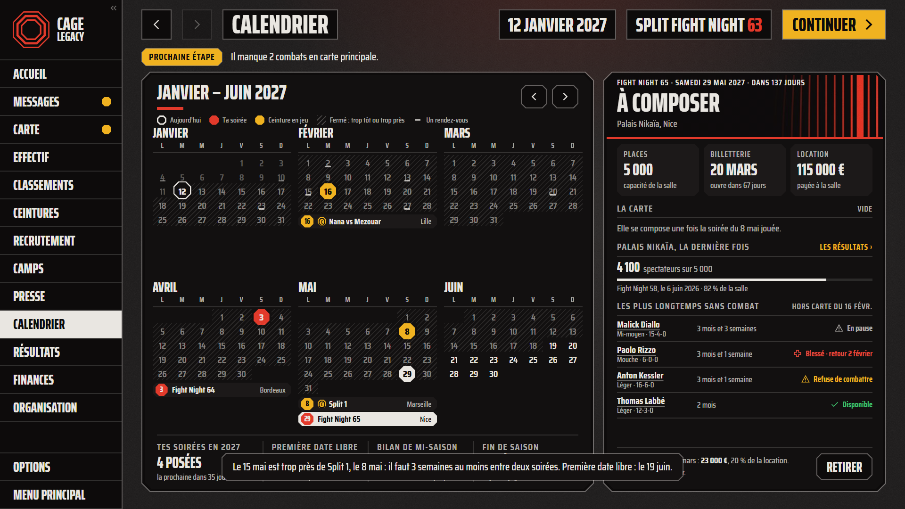
Maquette · &jour=2027-02-20 · un jour où une autre organisation se produit : le mois dans l’ordre (retour de Rizzo, Undisputed Cage, conférence de presse, pesée, la soirée, Garden of Blood), le jour en blanc, et pourquoi on ne peut pas y poser de soirée
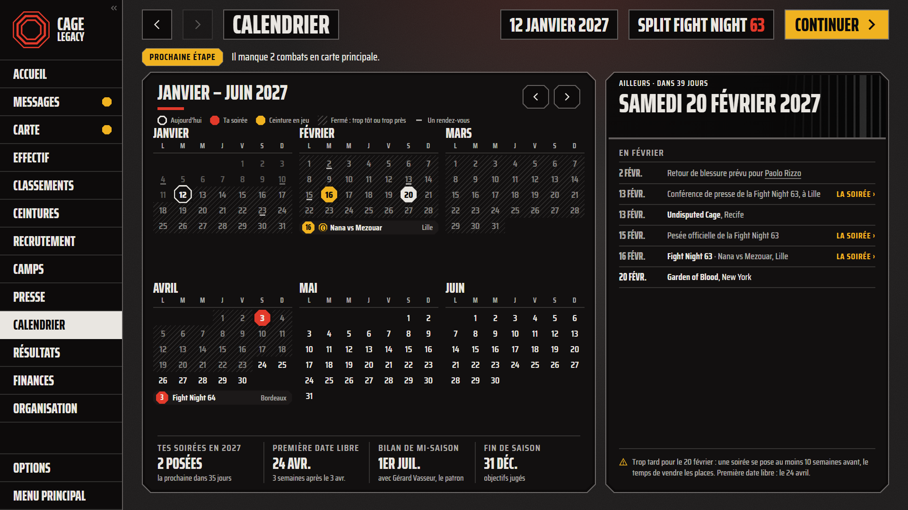
Calendrier · avant ton arrivée
Maquette · &soiree=62 · juillet à décembre 2026 : les soirées jouées, en gris (doré éteint quand une ceinture était en jeu), chacune avec son résultat principal ; à droite, spectateurs, ce qu’il reste, la ceinture, la carte et les primes, avec « Les résultats › »
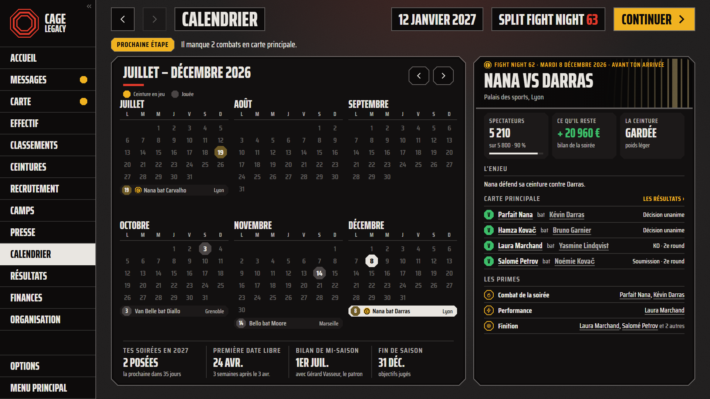
Maquette · &fiche=mezouar · la fiche s’ouvre par-dessus le calendrier, qui reste derrière
Calendrier · hypothèses prises (à valider)
Retour du 17/11 : reprendre la première version et la retravailler au propre. Corrigé : les lignes de soirée qui flottaient entre deux mois (chacune est maintenant collée sous son mois) ; les points sans légende (une légende, qui ne montre que les repères présents) ; aujourd’hui et le jour choisi qui se ressemblaient (anneau rouge, anneau blanc) ; la période fermée invisible (hachurée) ; l’absence de retrait ; le panneau de pose à moitié vide ; « 20 h 30 » qui contredisait « Début à 21 h » de la Carte.
Retour du 17/11, deuxième capture : on pouvait poser une soirée chaque jour (13, 14, 15 et 16 mai), et la troisième ligne de mai débordait sur les faits ; les carrés des rendez-vous tombaient entre deux rangées. Corrigé : trois semaines au moins entre deux soirées (proposition : le plus court écart de Split en 2026 est de 24 jours, du 14 nov. au 8 déc. ; une organisation de cette taille n’a qu’une équipe de production et un effectif limité), donc deux soirées au plus par mois ; la « première date libre » en tient compte (24 avril, trois semaines après la 64) ; le rendez-vous devient un trait sous le chiffre ; les hachures forment une seule zone.
Retours du 17/11, « beaucoup d’espace vide, peu de vie », puis « enlève les couleurs, c’est cet espace qu’il faut remplir », « trop d’information » : la hauteur d’une semaine s’ajuste pour que six semaines et les soirées du mois le plus chargé remplissent la case d’un mois ; les jours des mois voisins, essayés puis retirés (« trop d’information »), ne sont pas affichés ; six mois restent à l’écran (choix d’Anthony) ; les couleurs des autres organisations sont retirées. Leurs soirées restent en texte, dans la liste d’un jour et en « Le même soir » (inventées, à relire). Une soirée à composer montre ce que Split a fait la dernière fois dans sa salle (3 020 spectateurs sur 3 800 à Bordeaux, Fight Night 57).
Couleurs (section 6) : le rouge de marque ne porte plus de donnée. Aujourd’hui passe en anneau blanc, le jour choisi en blanc cassé, texte noir (l’élément courant du jeu), et la date d’une ligne de soirée dans un octogone à la couleur de la soirée. Les textes inventés portent « à relire ».
Les noms : « Fight Night 63 » (comme l’en-tête et les Résultats) avec l’affiche « Nana vs Mezouar » ; une soirée jouée se lit par son résultat (« Nana bat Darras ») ; « Soirée phare » remplace « grande soirée » (autres pistes : « Gala », « Nuit des titres ») et se numérote « Split 1 » ; proposition : une ceinture au moins y est en jeu, une par mois au plus (règle du jeu). Les numéros de Fight Night suivent l’ordre des dates.
Poser et retirer : au moins dix semaines avant (proposition). Les cartes de l’UFC sont annoncées 8 à 12 semaines avant, et la billetterie ouvre alors. Au 12 janvier, première date libre le 23 mars ; la 63 ne se retire plus (billetterie ouverte le 8 décembre).
Le coût d’un retrait suit le barème d’une salle : rien au-delà de 180 jours, 20 % de la location de 91 à 180 jours, 50 % de 70 à 90 jours.
Inventé : la 64 posée par ton prédécesseur le 2 décembre 2026 ; la conférence de presse le 13 février et la pesée la veille de la soirée.
Écarts repérés ailleurs (pas corrigés) : la 63 a 4 000 places (Accueil, Finances, Ta carrière) mais 4 200 dans les Résultats ; à la 56, les Résultats disent que Nana a « gardé » sa ceinture, la fiche qu’il l’a prise ; les soirées 62 et 63 tombent un mardi (à l’UFC, le samedi).
Ceintures (R22, T4c, Q22a à Q22c) · un onglet des Classements, avec la lignée et le prochain défi (17-18/11, validé)
Jeu actuel · « Le mur » : un cadre jaune par ceinture, défenses et durée seules (« 16 défenses en 65 mois », « 0 défense depuis 0 jour »), barre de touchesMaquette · index.html?ecran=ceintures&sexe=H&cecat=toutes · l’onglet « Ceintures » des Classements, mêmes filtres ; Hommes sans catégorie : les huit champions de Split, chacun sur le tunnel doré, avec sous son nom son palmarès, son rang mondial et sa place dans la lignée (retour du 18/11 : plus de cadre posé sur le tunnel, plus rien ne se chevauche) ; dessous, le prochain défi (combat signé, ou le n° 1) et le dernier combat pour le titre
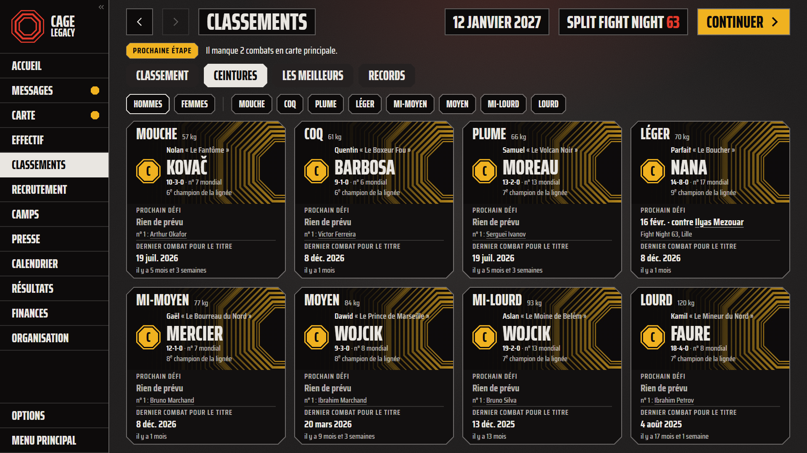
Ceintures · une catégorie : la lignée, puis le prochain défi
Jeu actuel · une ceinture : « 1 défense en 23 mois », la lignée des 5 derniers sur une colonne (« Du début à la soirée 39 · 2027-2024 »), le prétendantMaquette · &cecat=Poids léger · la lignée en frise datée : un trait par règne à l’échelle du temps (gris, doré pour le champion en titre, hachuré pour un intérim, pointillés pour une ceinture vacante, octogone doré pour le prochain défi), chaque champion au-dessus ou au-dessous avec ses dates, ses défenses et la fin de son règne ; dessous, Nana contre Mezouar le 16 févr., leur dernier combat et qui attend derrière, « Ouvrir la carte »
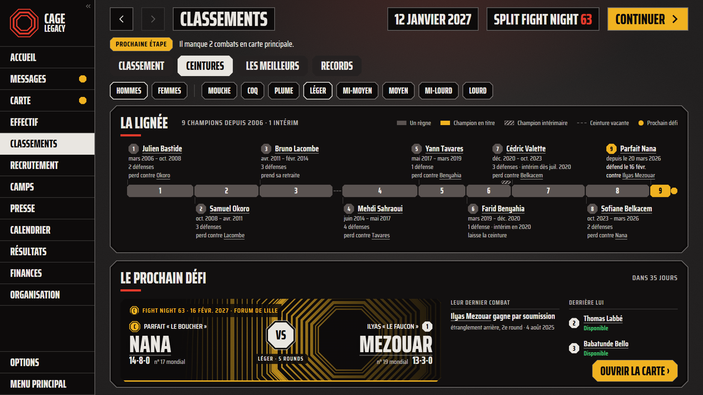
Maquette · &cecat=Poids mouche · rien de signé : le champion face au n° 1 sur le tunnel éteint, le dernier combat pour le titre (Kovač prend la ceinture à Pinto le 19 juil. 2026), les n° 2 et 3 avec leur état, « Proposer le combat » (la carte de la 64 n’est pas dans la maquette : un message le dit)
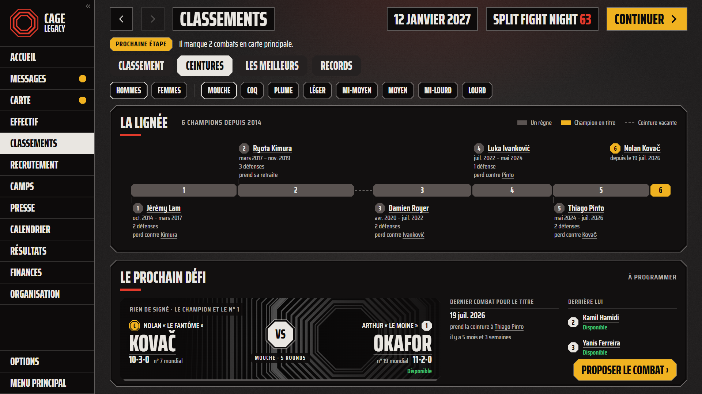
Maquette · &cecat=Poids coq · un intérim : Rinaldi blessé au genou en 2024, Barbosa champion intérimaire le 6 août 2024, puis réunifie en battant Rinaldi le 22 févr. 2025
Ceintures · les femmes, et après la 63
Maquette · &sexe=F&cecat=toutes · quatre cartes larges : la championne à gauche, à droite le prochain défi, le dernier combat pour le titre et les trois championnes d’avant
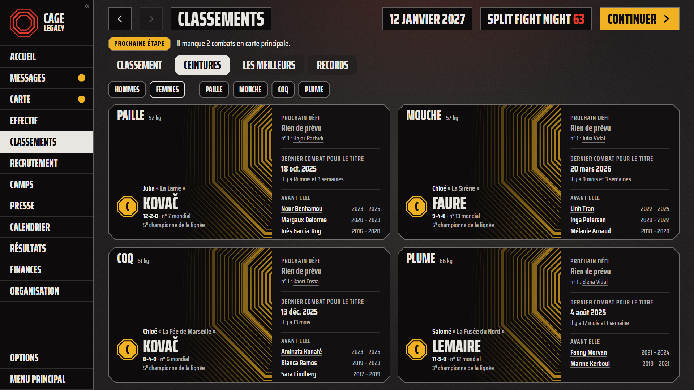
Maquette · &sexe=F&cecat=Poids paille F · Garcia-Roy et ses 5 défenses (le record) ; la n° 1 Rachidi est à l’affiche le 16 févr. contre Meziane, hors titre
Maquette · &apres=1 · la 63 jouée (Résultats) : Mezouar devient le 10e champion des légers, Nana « perd contre Mezouar », le n° 1 est Nana, blessé jusqu’au 19 marsMaquette · &fiche=cecedricvalette · un ancien champion a sa fiche courte, tirée de la lignée : ce qu’il fait (à relire), son parcours, sa ceinture (la prise, la fin), toute la lignée avec sa place, « Voir la lignée › »
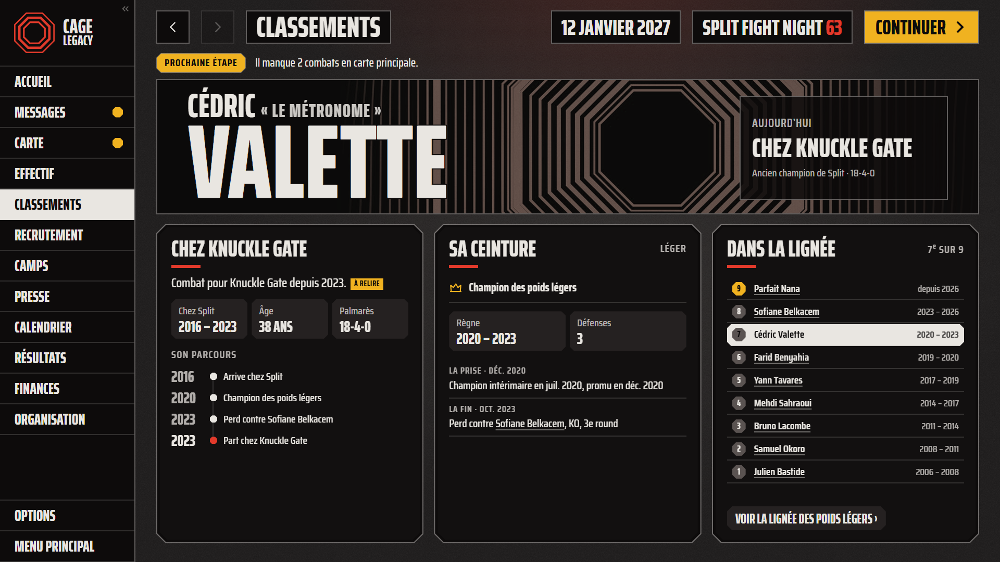
Maquette · &cecat=Poids coq&fiche=gpoidscoqC · la fiche d’un champion dit la même chose que la lignée : « Défense n° 1 » le 8 déc. (soirée 62), « Réunification » contre Rinaldi le 22 févr. 2025 (soirée 49)Maquette · &clvue=classement · le Classement garde son onglet, le premier des quatre ; un clic sur un nom de la lignée ou d’une carte ouvre la fiche par-dessus, Retour et Avant suivent l’onglet, le sexe et la catégorie
Ceintures · hypothèses prises (à valider)
Retour du 18/11, « des textes se superposent, pas à la même hauteur » : la frise perd l’axe des années (les dates sont dans chaque nom) et ses textes passent à 18 px au moins, avec plus d’écart entre deux noms ; dans le prochain défi, les deux combattants partent de la même hauteur ; sur les cartes, le cadre du palmarès ne recouvre plus le surnom, prénom et surnom sont en texte courant, l’accent de « Kovač » ne touche plus la ligne du dessus.
Retour du 18/11, « un peu plus de vie » (mouvement discret, section 11) : sur les cartes, le tunnel glisse, le C se pose et la carte se soulève au survol ; dans la frise, les traits poussent l’un après l’autre, les traits de rappel descendent vers les noms, un reflet passe sur le règne en cours et le prochain défi pulse ; dans le prochain défi, les deux combattants arrivent de leur coin et le VS se pose ; les nombres défilent. Tout s’arrête si l’ordinateur demande moins d’animations.
Regroupée avec le Classement (T4, « peut-être juste ceinture et classement ») : un onglet entre « Classement » et « Les meilleurs », avec la même ligne de filtres, gardée d’un onglet à l’autre. Ceintures quitte la barre, comme Préliminaires a rejoint la Carte. Si tu supprimes l’écran, seul l’onglet disparaît.
Pas de doublon avec le Classement : le règne en cours ne répète ni ses défenses ni sa durée (sa ligne dit « depuis le 20 mars 2026 » et le prochain défi). À savoir : la maquette validée du Classement ne montre pas encore défenses et durée du règne (le plan, R22, les y ajoute) ; il faudra les y mettre.
Règles réelles (recherche, Q22b, Q22c) : l’UFC n’a pas de délai de défense écrit ; ses grands champions défendent tous les 6 à 9 mois (Johnson, 11 défenses en 2 142 jours ; Silva, 10 en 2 457 ; Jones, 8 en 1 501). Une ceinture intérimaire est rare (environ 25 depuis 2003, toutes catégories, aucune chez les femmes) : elle naît quand le champion ne peut pas combattre pendant des mois (blessure, suspension, autre catégorie), le plus souvent 6 à 12 mois après son dernier combat (calcul sur les intérims de l’UFC). L’intérimaire affronte ensuite le champion (réunification) ou est promu s’il laisse la ceinture (Aldo 2016, Whittaker 2017, Aspinall 2025). Refuser de défendre fait perdre la ceinture (de Randamie, 2017), l’inactivité aussi (McGregor, 2018, plus de 500 jours).
Ce qu’en fait la maquette : aucun délai affiché, seulement des faits datés (dernier combat pour le titre, il y a combien). Deux intérims en vingt ans chez Split : les légers en 2020 (Benyahia champion des mi-moyens, Valette intérimaire puis promu) et les coqs en 2024 (Rinaldi blessé, Barbosa intérimaire puis réunifie). Une ceinture retirée (Rousseau, 2014, refuse de défendre), quatre champions partis ailleurs, sept retraites.
Cohérent avec les écrans validés : Records (Zaïtsev, 40 mois, le plus long règne, parti chez Garden of Blood en sept. 2021 ; Garcia-Roy, 5 défenses de suite, de 2016 à 2020 ; Benyahia, seul double champion, légers 2019 et mi-moyens 2020 ; Kovač, plus jeune champion, 2026), staff (Kerloc’h champion des moyens de 2017 à 2019), fiche de Nana (ceinture prise à Belkacem le 20 mars 2026, défenses contre Carvalho et Darras, Mezouar l’a battu le 4 août 2025), Carte (Nana – Mezouar le 16 févr., Rachidi – Meziane), Calendrier (ceinture en jeu aux soirées 56, 59 et 62 en 2026). Aucun règne au-delà de 40 mois, aucune série au-delà de 5 défenses.
Conséquence à valider : comme seules les soirées 56, 59 et 62 avaient une ceinture en jeu en 2026, cinq champions n’ont pas défendu depuis plus d’un an (lourds et plumes F depuis le 4 août 2025, pailles F depuis le 18 oct. 2025, mi-lourds et coqs F depuis le 13 déc. 2025). Les combats pour le titre d’avant 2026 suivent les numéros de soirée de la fiche de Nana.
Données communes retouchées (à valider) : pour les onze champions tirés au hasard, le dernier combat est maintenant leur dernier combat pour le titre (date, soirée, adversaire, 5 rounds) et la fiche marque leurs combats pour le titre ; six séries qui finissaient par une défaite (un champion ne perd pas son dernier combat) sont remises dans l’autre ordre, même bilan. Effectif, Classement, Messages (« Ils attendent un combat ») et Calendrier lisent ces dates.
Inventé, à relire : les 58 anciens champions (noms, surnoms, ce qu’ils font), les adversaires des défenses, les dates des règnes avant 2026. Jamais un nom de vrai combattant.
Écarts repérés ailleurs (pas corrigés) : à la 56, les Résultats disent que Nana a « gardé » sa ceinture, la fiche et le Calendrier (« 3e défense ») qu’il l’a prise : la maquette suit la fiche ; Résultats et Calendrier disent de Mezouar « qu’il avait battu en 2025 » alors que Mezouar a battu Nana (Carte, fiche) ; les Résultats des soirées 56, 59 et 62 ne montrent pas les autres combats pour le titre (le reste de la carte y est tiré au hasard) ; trois champions ont 22 ou 23 ans dans l’Effectif (Dawid Wojcik, Chloé Kovač, Salomé Lemaire) alors que les Records font de Kovač, 25 ans, le plus jeune champion ; les numéros de soirée des Records (41 en mars 2021, 55 en juin 2025) ne collent pas avec ceux de la fiche de Nana (50 en avril 2025, 53 en août 2025) ; deux champions s’appellent Wojcik et deux Kovač (Effectif) ; la fiche de Belkacem ne dit pas encore qu’il a été champion.
Presse (R28, Q28a, Q28b, Q13, Q10c) · de nouveaux exemples visuels, en trois onglets (18/11, première passe)
Jeu actuel · nouvelle partie, CL.go('mgmt_presse') : « 158 nouvelles cette semaine », une grande carte « Spina attend depuis 15 mois », un triangle rouge sans rôle, des défis et des « envies du public » sans date ni source, une barre de touchesMaquette · index.html?ecran=presse · À la une : l’article du moment sur le tunnel doré (Tableau Noir, Nana–Mezouar 2, trois faits datés) ; ce que la presse dit de tes combattants, une ligne chacun, avec « Salué », « Critiqué » ou « Cité », le média et la date ; les trois médias présentés (ce qu’ils sont, leur public, un autre article) ; le pronostic des lecteurs pour le 16 février
Maquette · &prvue=defis · Les défis : qui réclame qui, la phrase exacte, d’où elle vient, puis ce que ta carte permet : « Possible le 16 févr. » (blanc, place vide) avec « Placer sur la carte › », « Signé » (vert), « Déjà à l’affiche » (gris), « Rizzo blessé » (rouge). À droite, le public réclame une seule affiche, champion contre champion, et ta carte du 16 févrierMaquette · « Placer sur la carte › » pour Belkacem – Bello : le combat 3 se remplit, la ligne passe à « Sur la carte », la Prochaine étape dit « Il manque 1 combat » ; Darras – Labbé reste possible (combat 4)
Maquette · &prvue=fil · Le fil (Q13 : il vient ici) : tout ce qui s’est écrit depuis la Fight Night 62, par jour ; filtres par sujet (Split, ta soirée, tes combattants, ailleurs) et par média, gardés au retour. L’article ouvert : le média et ce qu’il est, le titre, le chapeau, la signature (Garcia-Roy ouvre sa fiche), le texte, trois faits, les deux autres médias sur le même sujet, une actionMaquette · &prart=a03tn · la précision demandée (R28) : « un coude au sol, à 0:50 du 1er round », le public et le record de la salle ; &prart=a08dch donne les cartes des juges (50-45, 49-46, 48-47) et les finitions de la 62 lues dans les Résultats
Maquette · « Voir le résultat » ouvre la 62 dans les Résultats ; Retour revient sur l’article, la liste se replace sur luiMaquette · &prsujet=ailleurs&prmedia=lf · rien à lire : la phrase dit pourquoi et deux boutons défont le filtre
Maquette · tout nom est cliquable : la fiche s’ouvre par-dessus la Presse (ici Mezouar depuis « Tes combattants dans la presse ») ; Retour la refermeMaquette · un défi choisi depuis un article (« Voir le défi ») porte son encadré octogonal ; un clic sur la ligne ouvre l’article d’où vient la phrase
Presse · hypothèses prises (à valider)
Q28a, « de nouveaux exemples visuels » : trois façons de lire la presse, chacune dans un onglet, pour que tu choisisses la forme : une page de journal (À la une), un tableau d’action (Les défis), un fil chronologique avec l’article ouvert (Le fil). Rien n’empêche d’en garder un seul ou d’en fusionner deux.
Retiré du jeu actuel (R28) : « X attend depuis 15 mois », les envies du public pour n’importe quel combat, « 158 nouvelles cette semaine », le triangle rouge, la barre de touches. Ajouté : chaque phrase a son média, sa date et sa source (interview, vidéo, sujet du Forum) ; chaque finition a son geste et son temps ; chaque décision ses cartes de juges.
Les envies du public (Q28b) : un seul encadré, pour une seule affiche du niveau d’un « champion contre champion » (Nana, champion des légers, contre Mercier, champion des mi-moyens), mesurée par un sondage du Forum (38 % de 4 210 votes) et avec la condition qui la rend possible. Aucune autre affiche n’y entre tant qu’elle n’est pas de ce niveau. C’est le seul exemple de la maquette : à toi de dire si ce niveau te convient.
Pronostics : un pourcentage de votes sur le vainqueur (61 % pour Mezouar), pas sur la qualité du combat : il respecte la charte (H1 : aucune note d’un combat). À confirmer.
Salué, Critiqué, Cité : un mot coloré par ligne, vert pour un compliment, rouge pour une critique, gris pour une simple mention (section 6 : jamais une couleur seule). Tu voulais « trouver son combattant qui se fait complimenter » : c’est ce panneau.
Les défis se placent sur la carte depuis la Presse en un clic, si la place existe (comme « Les idées de Leïla » dans les Messages). Un défi impossible dit pourquoi (blessé, déjà à l’affiche) et quand il le redevient. « Possible » est blanc (une place vide), « Signé » vert : deux états qui ne se ressemblent plus.
Les trois médias (Q10c) sont présentés : ce qu’ils sont en une ligne, leur public (18 400 lecteurs par numéro, comme dans les Messages ; 46 000 abonnés ; 12 300 membres, inventés). Noms gardés pour cette passe ; propositions de noms (rien n’est appliqué) : Cage Hebdo → « Cinq Rounds » ou « L’Hebdo du Combat » ; Tableau Noir → « Le Ralenti » ou « Image par Image » ; Le Forum → « Les Gradins » ou « Premier Rang ». Le Forum est à renommer en priorité : il se confond avec le Forum de Lille, la salle du 16 février (« Le Forum de Lille a 4 000 places », écrit par Cage Hebdo, se lit mal à côté de « Le Forum · 3 140 votes »).
À savoir : le jeu a déjà dix médias dans ses données (mgmt-medias-data.js : Cage Hebdo, Sources Proches, Clé de Bras, La Pesée, Tableau Noir, Micro Tendu, Le Plateau, Le Forum, la presse du pays, Coin Rouge). La maquette n’en montre que trois, comme tu l’as demandé ; il faudra décider du sort des sept autres.
Pas de doublon avec les Messages : la une de Cage Hebdo du 9 janvier est une ligne du fil, avec « Le message » pour la lire ; « Presse › » dans ce message ouvre maintenant cet article. Sur À la une, l’article du moment, le pronostic et les phrases sur tes combattants ne sont pas répétés dans « Les trois médias ».
Données reprises : l’Effectif et les Classements (rangs, bilans, surnoms, Kovač et Mercier champions), la Carte (Nana – Mezouar, Rachidi – Meziane, Belkacem sans adversaire, Van Belle – Carvalho en préliminaires), les Résultats (62 : 50-45, 49-46, 48-47, prime du combat de la soirée pour les deux, 5 210 spectateurs ; finitions de la carte), la fiche de Nana (Mezouar l’a soumis le 4 août 2025, 2e round, 3:40, à la 53 ; puis Belkacem, Carvalho par KO au 3e round à 2:14, Darras), le staff (Garcia-Roy consultante de Cage Hebdo : sa chronique du 12 janv., Rachidi n° 1 des espoirs le 5 janv., son bilan du 29 déc. ; Ferhat et son « Nana ne recule jamais » du 9 déc.), l’Organisation (Pure Impact à Dubaï le 3 janv., 4 100 spectateurs, record 7 200 ; Garden of Blood à New York le 20 déc., 16 900, record 19 400), le Calendrier (Fight Night 64 le 3 avr.), les Messages (Van Belle contacté par MMA Korner et Pure Impact, 7 janv. ; 18 400 lecteurs).
Inventé, à relire : tous les articles, leurs titres et leurs citations, les sondages (3 140 et 4 210 votes), le public des trois médias, Julien Morel (déjà signataire dans la fiche), Yusuf Demir et Lucas Brandão (Pure Impact), Andre Whitfield et Mateo Ruiz (Garden of Blood). Jamais un nom de vrai combattant.
Écarts repérés ailleurs (pas corrigés) : le message de Cage Hebdo dit « l’an dernier, Split n’a rempli que 46 % du Forum de Lille », mais aucune soirée de 2026 n’a eu lieu à Lille (Résultats) : la maquette ne reprend pas cette phrase ; le message du médecin dit que Rizzo « peut combattre à la soirée du 23 mars », alors que la prochaine soirée après la 63 est la 64, le 3 avril (Calendrier) : la maquette dit « au plus tôt le 3 avr. » ; la fiche de Mezouar a deux combats à neuf jours d’écart (4 et 13 août 2025) ; Mezouar, Rachidi, Meziane et Lecomte ont leur dernier combat le 8 décembre, mais ne sont pas sur la carte de la 62 dans les Résultats ; Garcia-Roy « signe la chronique du lundi » mais sa chronique est datée du 12 janvier, un mardi (la maquette garde la date de sa fiche).
Points ouverts que la maquette ne touche pas : Split 6e ou 2e, l’avertissement du patron, 4 000 ou 4 200 places, « qu’il avait battu en 2025 », l’âge des plus jeunes champions, défenses et durée du règne au Classement.
Arrivée (R1 à R4, Q1a, Q1b, Q3, Q4, point tranché n° 8) · le déroulé complet, du 4 janvier à l’Accueil (19/11, deuxième passe : « plus vivant et harmonieux, ressentir la beauté d’être embauché »)
Jeu actuel · après « Créer la partie », six ans se jouent avant l’arrivée (écran inchangé, hors de cette passe)Jeu actuel · « Ton arrivée » (R1) : six ans d’histoire, douze champions, le prédécesseur et ses promesses, daté du 12 janvier
Arrivée · l’ouverture : Split t’embauche
Jeu actuel · « Six ans sont écrits », puis « Entrer dans Split »Maquette · 2,6 s après l’ouverture : on entre dans le tunnel du jeu ; la date et Lyon, « Bienvenue chez », SPLIT qui se resserre, la barre rouge, « Split t’embauche comme » MATCHMAKER. 3,9 s en tout, un clic l’écourte ; rien avec prefers-reduced-motion
Arrivée · étape 1, Split : l’intro façon FM
Jeu actuel · « Ton arrivée » : beaucoup de noms qu’on ne connaît pas encoreMaquette · index.html?ecran=arrivee&ppetape=split · pas de barre latérale pendant l’arrivée ; les étapes en haut (le numéro devient une coche, le trait se remplit) ; le bouton jaune dit où il mène (« Ton contrat ») ; le tunnel se resserre sur le logo puis respire lentement, un reflet passe, Split et ton poste glissent, les quatre chiffres défilent ; quatre faits utiles et pas évidents pour qui arrive, chacun avec son visuel qui s’anime et sa légende : 88 % des places vendues en 2026 mais une seule salle pleine sur 7 (une barre par soirée, la ligne pointillée = salle pleine), 5 champions sans combat depuis plus d’un an (contour vide), 50 combattants sans combat depuis 6 mois (blessés à part), 93 à leur dernier combat sous contrat ; en bas, le fil « Split en bref » qui défile, détaché du bandeau (étiquette blanche, bande plus claire, texte blanc, sans fondu ; il s’arrête au survol) : le record, la dernière soirée et son résultat, l’organisation juste devant, le nombre de combattants dans le top 5 et le top 15 mondial ; le logo luit doucement ; dessous, ta première soirée et ton équipe
Arrivée · le choix d’un espoir, et le premier écran du jeu actuel
Maquette · 0,33 s après le clic : le nom part de la carte et se pose dans sa case du bandeau, qui s’éclaire ; le second choix fait pulser « Entrer chez Split »Jeu actuel · le premier écran de gestion après l’arrivée : la Carte (le dernier bouton de l’arrivée y mène)
Arrivée · étape 2, Ton contrat et ce qui manque, fusionnés (R2, R3, Q3)
Jeu actuel · « Ton contrat », puis « Ce qui manque », qui affiche la même page (R3) ; des objectifs déjà atteints (R2)Maquette · &ppetape=contrat · remise comme à la première passe (retour du 19/11) : à gauche le contrat et le patron, à droite les trois objectifs en lignes, chacun avec aujourd’hui, ce qu’il veut et ce qui manque ; légende sous chaque échelle, « Ce qui manque » encadré de jaune (à toi d’agir), échelles plus grandes ·
Arrivée · étape 3, Tes espoirs : 2 sur 6, en cartes (R4, Q4)
Jeu actuel · « Tes trois espoirs » : des statistiques sans contexte, 3 à garder, la fiche fait sauter l’étape (R4)Maquette · &ppetape=espoirs · le bandeau dit ce que l’on fait (« Choisis-en deux. Leïla te donnera de leurs nouvelles chaque semaine. ») et montre les deux cases à remplir ; six cartes : catégorie, âge, état, prénom « surnom », nom (cliquable), palmarès et série, rang chez Split et mondial, style, sa particularité, contrat ; au survol la carte se soulève et un trait rouge la souligne ; choisie, contour et bouton blancs
Arrivée · la fiche sans sauter l’étape, et le refus d’un troisième espoir
Maquette · &ppfiche=gpoidslourd1 · un clic sur un nom ouvre la fiche par-dessus ; Retour la referme et l’on est toujours à l’étape 3, avec ses choixMaquette · deux espoirs choisis : les deux cases sont remplies, le petit octogone « à faire » de l’onglet disparaît ; un troisième dit pourquoi il est refusé et quoi faire ; « Entrer chez Split » sans deux choix dit combien il en manque et secoue les cases vides
Arrivée · la fin du déroulé : l’Accueil du 4 janvier
Maquette · &ppetape=accueil · l’Accueil validé, sans changement de forme, avec les données du 4 janvier : 43 jours, carte 1 / 4, 2 140 places, cinq messages du jour, tes deux espoirs dans « Tes suivis », Marco à Turin ; Retour rouvre l’étape 3 ; Continuer fait défiler les jours jusqu’au 12, où reprend le reste de la maquetteMaquette validée · l’Accueil du 12 janvier, pour comparer
Arrivée · hypothèses prises (à valider)
Deuxième passe (retour du 19/11) : une ouverture qui fait ressentir l’embauche ; les trois étapes construites pareil (les étapes en haut, le bandeau sur le tunnel avec le logo toujours au même endroit, puis le contenu), le bandeau qui change de hauteur sans saut d’une étape à l’autre ; chaque étape dit ce qu’elle contient ; le bouton jaune nomme l’étape suivante ; le contenu arrive du côté où l’on va ; tunnel qui respire et reflet en continu ; l’étape 3 avec les deux cases à remplir et le nom qui y vole ; le tunnel quitte les cartes des espoirs (moins de rouge répété).
Troisième passe (19/11) : « Ton contrat » remis comme à la première passe, sans bandeau ; « Tes espoirs » inchangé ; le bandeau de Split plus rempli et plus vivant ; puis (retour suivant) seulement des infos utiles et pas évidentes, puis le fil remis en bas, mais détaché pour qu’il ne se fonde plus dans le bandeau ; « Ton contrat » légèrement amélioré. Mise au propre : lignes des quatre chiffres alignées d’une case à l’autre ; cartes des espoirs plus compactes (le bouton ne touche plus le bord) ; case vide alignée sur la case pleine ; dans le bandeau bas, le tunnel réduit pour que ses octogones se voient autour du logo ; le message de Leïla nomme les deux espoirs choisis. Puis (retour suivant) le fil « Split en bref » reprend toute la largeur et le tunnel est coupé net au-dessus (le trait translucide du fil le laissait voir) ; les quatre cases mélangent quatre thèmes : la place au classement et son point faible (la mesure du classement des huit où Split est le plus mal placé), la caisse au 4 janvier (écran Finances), les places vendues en 2026, les combats pour un titre en 2026 (seuls les combats principaux portent un titre dans les données : à vérifier). Enfin : le fil garde trois nouvelles, qui tiennent en entier quand il ne défile pas (mouvement réduit) ; les places vendues en une seule jauge ; les octogones vides dessinés en entier.
Le déroulé (point tranché n° 8) : une ouverture, trois étapes, puis l’Accueil. 1 · Split (l’organisation, ton poste, ta première soirée, ton équipe), 2 · Ton contrat (fusionné avec « Ce qui manque »), 3 · Tes espoirs, puis l’Accueil du 4 janvier. C’est l’ordre de FM : accueil au club, attentes du conseil, premières tâches. L’écran « six ans avant ton arrivée » qui précède n’est pas touché.
Pas de barre latérale pendant l’arrivée : l’écran prend toute la largeur, comme la prise de poste dans FM ; la barre entre avec l’Accueil. En haut, les étapes en onglets (on va et vient librement) ; à la place de Continuer, le bouton jaune nomme l’étape suivante (« Ton contrat », « Tes espoirs », « Entrer chez Split »). Retour et Avant suivent les étapes ; les choix sont gardés (localStorage, clé maquette-arrivee-1). Adresse : ?ecran=arrivee&ppetape=split|contrat|espoirs|accueil&ppchoix=rizzo,musaev&ppfiche=<id>&ppouv=0 (sans l’ouverture).
Le prédécesseur (Q1b) n’apparaît nulle part dans l’arrivée : ni son nom, ni ses promesses, ni « ce qu’il t’a laissé ». Il reste dans « Split avant toi » (Ta carrière). L’intro dit la même chose (62 soirées depuis 2004, 12 champions) sans reprendre ce panneau.
« Ce qui manque » (Q3) n’est plus une page : chaque objectif dit ce qui manque pour l’atteindre (« Passer Fighting Pacific et Knuckle Gate », « 3 places à gagner », « 1 860 places en 43 jours, environ 43 par jour »). Les objectifs sont ceux de Ta carrière ; aucun n’est déjà atteint (R2, point tranché n° 9).
Les espoirs (Q4) : six combattants de Split de 22 à 25 ans, deux femmes, cinq catégories et quatre arts martiaux ; une particularité chacun, vérifiée dans les données (Petrov est bien le plus jeune du top 20 mondial des lourds, Gomes est en fausse garde). Aucune histoire. Rizzo, Musaev et Rachidi sont ceux de « Tes suivis » à l’Accueil du 12. Les deux choisis entrent dans « Tes suivis ». Pas d’espoir « à recruter » (le jeu actuel en met deux) : à toi de dire si tu en veux.
Le 4 janvier, déduit du 12 : Nana – Mezouar déjà à l’affiche (Cage Hebdo l’annonce le 4), le reste de la carte vide (1 / 4) ; 2 140 places vendues (2 626 le 12, billetterie ouverte depuis le 8 décembre) ; Marco à Turin jusqu’au 8 ; Rizzo blessé depuis le 28 décembre (Infirmerie) ; quatre absents ; Split 6e (7e le 12 décembre, l’Organisation compare au mois d’avant).
Mouvement : tunnel qui se resserre, logo qui se pose, Split et le poste qui glissent, chiffres qui défilent, cases et lignes qui arrivent, jauges qui se remplissent, la place sur l’échelle qui se pose ; cartes qui se soulèvent au survol, tunnel qui s’éclaire, petit rebond au choix ; la barre qui entre avec l’Accueil. Tout s’arrête avec prefers-reduced-motion.
Inventé, à relire : « Bienvenue chez », « Split t’embauche comme », « depuis ce matin », « Ce que tu signes, et ce que le patron attend de ta saison », « Choisis-en deux. Leïla te donnera de leurs nouvelles chaque semaine », les lignes de « Ton équipe » (Leïla « pour un avis, à la demande », le médecin « 4 absents »), deux messages du 4 janvier (« Tes deux espoirs » de Leïla, « Quatre absents au 4 janvier » du médecin), « signé le 4 janv. ». Les répliques du patron et de Leïla sont reprises des Messages validés ; aucune nouvelle réplique de personnage, donc aucun [EMPLACEMENT AUTEUR].
Écarts que la maquette montre sans les trancher : l’arrivée présente les objectifs de Ta carrière (4e des huit, top 5 mondial) ; l’Accueil validé garde « Rester dans les deux premières · 2e » et « top 10 · meilleur n° 14 ». Or le meilleur lourd de Split est Kamil Faure, n° 8 mondial : le « top 10 » de l’Accueil serait déjà atteint (R2). Le message du patron (« Ce que le patron attend de ta saison ») est daté du 5 janvier dans les Messages : l’Accueil du 4 le montre « aujourd’hui », puisque l’arrivée présente les objectifs ce jour-là (à aligner dans un sens ou dans l’autre).
Autres écarts repérés (pas corrigés) : Ta carrière dit « 12 janv. : 2 combats placés », alors que Nana – Mezouar était déjà annoncé le 4 (un seul placé par toi, Rachidi – Meziane) ; l’Infirmerie blesse Rizzo le 28 décembre, l’Accueil et le message du médecin du 12 disent « hier » ; la fiche générée d’un espoir peut contredire ses données (Petrov, poids lourd « boxeur de pression », a battu Kessler et Belkacem, deux poids légers, et sa fiche dit « Boxe en contre ») ; les deux nouveaux messages du 4 janvier ne sont pas encore dans la boîte des Messages ; le choix des espoirs ne change pas « Tes suivis » de l’Accueil du 12 (Rizzo, Musaev, Rachidi).
Points ouverts que la maquette ne touche pas : Split 6e ou 2e, le nombre d’objectifs manqués qui déclenche l’avertissement (la règle de Ta carrière est reprise mot pour mot), 4 000 ou 4 200 places, « qu’il avait battu en 2025 », la 63 un mardi (la maquette ne donne pas le jour de la semaine), l’âge des plus jeunes champions, le nom des médias (Q10c).